for large values of n.]
for large values of n.]1. [HM01] What is limn→∞O(n− 1/3)?
2. [M10] Mr. B. C. Dull obtained astonishing results by using the “self-evident” formula O(f (n)) − O(f (n)) = 0. What was his mistake, and what should the righthand side of his formula have been?
3. [M15] Multiply (ln n + γ + O(1/n)) by 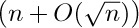, and express your answer in O-notation.
4. [M15] Give an asymptotic expansion of 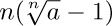, if a > 0, to terms O(1/n3).
5. [M20] Prove or disprove: O(f (n) + g(n)) = f (n) + O(g(n)), if f (n) and g(n) are positive for all n. (Compare with (10).)
6. [M20] What is wrong with the following argument? “Since n = O(n), and 2n = O(n), ..., we have
7. [HM15] Prove that if m is any integer, there is no M such that ex ≤ Mxm for arbitrarily large values of x.
8. [HM20] Prove that as n → ∞, (ln n)m/n → 0.
9. [HM20] Show that eO(zm) = 1 + O(zm), for all fixed m ≥ 0.
10. [HM22] Make a statement similar to that in exercise 9 about ln(1 + O(zm)).
11. [M11] Explain why Eq. (18) is true.
12. [HM25] Prove that 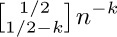 does not approach zero as k → ∞ for any integer n, using the fact that 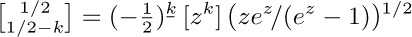.
13. [M10] Prove or disprove: g(n) = Ω(f (n)) if and only if f (n) = O(g(n)).
One of the most useful ways to obtain good approximations to a sum is an approach due to Leonhard Euler. His method approximates a finite sum by an integral, and gives us a means to get better and better approximations in many cases. [Commentarii Academiæ Scientiarum Imperialis Petropolitanæ 6 (1732), 68–97.]
Figure 12 shows a comparison of 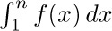 and 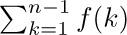, when n = 7. Euler’s strategy leads to a useful formula for the difference between these two quantities, assuming that f (x) is a differentiable function.
For convenience we shall use the notation
Our derivation starts with the following identity:
(This follows from integration by parts.) Adding both sides of this equation for 1 ≤ k < n, we find that
that is,
where B1(x) is the polynomial 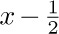. This is the desired connection between the sum and the integral.
The approximation can be carried further if we continue to integrate by parts. Before doing this, however, we shall discuss the Bernoulli numbers, which are the coefficients in the following infinite series:
The coefficients of this series, which occur in a wide variety of problems, were introduced to European mathematicians in James Bernoulli’s Ars Conjectandi, published posthumously in 1713. Curiously, they were also discovered at about the same time by Takakazu Seki in Japan — and first published in 1712, shortly after his death. [See Takakazu Seki’s Collected Works (Osaka: 1974), 39–42.]
We have
further values appear in Appendix A. Since
is an even function, we see that
If we multiply both sides of the defining equation (4) by ez − 1, and equate coefficients of equal powers of z, we obtain the formula
(See exercise 1.) We now define the Bernoulli polynomial
If m = 1, then 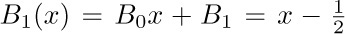, corresponding to the polynomial used above in Eq. (3). If m > 1, we have Bm(1) = Bm = Bm(0), by (7); in other words, Bm({x}) has no discontinuities at integer points x.
The relevance of Bernoulli polynomials and Bernoulli numbers to our problem will soon be clear. We find by differentiating Eq. (8) that
and therefore when m ≥ 1, we can integrate by parts as follows:
From this result we can continue to improve the approximation, Eq. (3), and we obtain Euler’s general formula:
using (6), where
The remainder Rmn will be small when Bm({x})f(m)(x)/m! is very small, and in fact, one can show that
when m is even. [See CMath, §9.5.] On the other hand, it usually turns out that the magnitude of f(m)(x) gets large as m increases, so there is a “best” value of m at which |Rmn | has its least value when n is given.
It is known that, when m is even, there is a number θ such that
provided that f (m+2) (x) f(m+4)(x) > 0 for 1 < x < n. So in these circumstances the remainder has the same sign as, and is less in absolute value than, the first discarded term. A simpler version of this result is proved in exercise 3.
Let us now apply Euler’s formula to some important examples. First, we set f(x) = 1/x. The derivatives are f(m)(x) = (−1)mm!/xm+1, so we have, by Eq. (10),
Now we find
The fact that 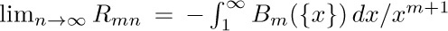 exists proves that the constant γ does in fact exist. We can therefore put Eqs. (14) and (15) together, to deduce a general approximation for the harmonic numbers:
Replacing m by m + 1 yields
Furthermore, by Eq. (13) we see that the error is less than the first term discarded. As a particular case we have (adding 1/n to both sides)
This is Eq. 1.2.7–(3). The Bernoulli numbers Bk for large k get very large (approximately (−1)1+k/22(k!/(2π)k) when k is even), so Eq. (16) cannot be extended to a convergent infinite series for any fixed value of n.
The same technique can be applied to deduce Stirling’s approximation. This time we set f(x) = ln x, and Eq. (10) yields
Proceeding as above, we find that the limit
exists; let it be called σ (“Stirling’s constant”) temporarily. We get Stirling’s result
In particular, let m = 5; we have
Now we can take the exponential of both sides:
Using the fact that 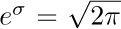 (see exercise 5), and expanding the exponential, we get our final result:
Exercises
2. [HM20] Note that Eq. (9) follows from Eq. (8) for any sequence Bn, not only for the sequence defined by Eq. (4). Explain why the latter sequence is necessary for the validity of Eq. (10).
3. [HM20] Let Cmn = (Bm/m!)(f(m−1)(n) − f(m−1)(1)) be the mth correction term in Euler’s summation formula. Assuming that f(m)(x) has a constant sign for all x in the range 1 ≤ x ≤ n, prove that |Rmn | ≤ |Cmn | when m = 2k > 0; in other words, show that the remainder is not larger in absolute value than the last term computed.
4. [HM20] (Sums of powers.) When f(x) = xm, the high-order derivatives of f are all zero, so Euler’s summation formula gives an exact value for the sum
in terms of Bernoulli numbers. (It was the study of Sm (n) for m = 1, 2, 3, ... that led Bernoulli and Seki to discover those numbers in the first place.) Express Sm (n) in terms of Bernoulli polynomials. Check your answer for m = 0, 1, and 2. (Note that the desired sum is performed for 0 ≤ k < n instead of 1 ≤ k < n; Euler’s summation formula may be applied with 0 replacing 1 throughout.)
5. [HM30] Given that
show that 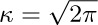 by using Wallis’s product (exercise 1.2.5–18). [Hint: Consider for large values of n.]
6. [HM30] Show that Stirling’s approximation holds for noninteger n as well:
[Hint: Let f(x) = ln(x + c) in Euler’s summation formula, and apply the definition of Γ(x) given in Section 1.2.5.]
7. [HM32] What is the approximate value of 11 22 33... nn?
8. [M23] Find the asymptotic value of ln (an2+ bn)! with absolute error O(n−2). Use it to compute the asymptotic value of 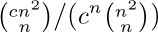 with relative error O(n−2), when c is a positive constant. Here absolute error ∊ means that (truth) = (approximation)+∊; relative error ∊ means that (truth) = (approximation)(1 + ∊).
9. [M25] Find the asymptotic value of 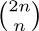 with a relative error of O(n−3), in two ways: (a) via Stirling’s approximation; (b) via exercise 1.2.6–2 and Eq. 1.2.11.1–(16).
In this subsection we shall investigate the following three intriguing sums, in order to deduce their approximate values:
These functions, which are similar in appearance yet intrinsically different, arise in several algorithms that we shall encounter later. Both P(n) and Q(n) are finite sums, while R(n) is an infinite sum. It seems that when n is large, all three sums will be nearly equal, although it is not obvious what the approximate value of any of them will be. Our quest for approximate values of these functions will lead us through a number of very instructive side results. (You may wish to stop reading temporarily and try your hand at studying these functions before going on to see how they are attacked here.)
First, we observe an important connection between Q(n) and R(n):
Stirling’s formula tells us that n! en/nn is approximately 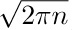, so we can guess that Q(n) and R(n) will each turn out to be roughly equal to .
To get any further we must consider the partial sums of the series for en. By using Taylor’s formula with remainder,
we are soon led to an important function known as the incomplete gamma function:
We shall assume that a > 0. By exercise 1.2.5–20, we have γ(a, ∞) = Γ (a); this accounts for the name “incomplete gamma function.” It has two useful series expansions in powers of x (see exercises 2 and 3):
From the second formula we see the connection with R(n):
This equation has purposely been written in a more complicated form than necessary, since γ(n, n) is a fraction of γ(n, ∞) = Γ (n) = (n − 1)!, and n! en/nn is the quantity in (4).
The problem boils down to getting good estimates of γ(n, n)/(n − 1)!. We shall now determine the approximate value of γ(x + 1, x + y)/Γ (x + 1), when y is fixed and x is large. The methods to be used here are more important than the results, so the reader should study the following derivation carefully.
By definition, we have
Let us set
and consider each integral in turn.
Estimate of I1: We convert I1 to an integral from 0 to infinity by substituting t = x(1 + u); we further substitute υ = u − ln(1 + u), dv = (1 − 1/(1 + u)) du, which is legitimate since υ is a monotone function of u:
In the last integral we will replace 1 + 1/u by a power series in υ. We have
Setting , we have therefore
(This expansion may be obtained by the binomial theorem; efficient methods for performing such transformations, and for doing the other power series manipulations needed below, are considered in Section 4.7.) We can now solve for u as a power series in w:
In all of these formulas, the O-notation refers to small values of the argument, that is, |u| ≤ r, |υ| ≤ r, |w| ≤ r for sufficiently small positive r. Is this good enough? The substitution of 1 + 1/u in terms of υ in Eq. (11) is supposed to be valid for 0 ≤ υ < ∞, not only for |υ| ≤ r. Fortunately, it turns out that the value of the integral from 0 to ∞ depends almost entirely on the values of the integrand near zero. In fact, we have (see exercise 4)
for any fixed r > 0 and for large x. We are interested in an approximation up to terms O(x−m), and since O((1/er) x) is much smaller than O(x−m) for any positive r and m, we need integrate only from 0 to r, for any fixed positive r. We therefore take r to be small enough so that all the power series manipulations done above are justified (see Eqs. 1.2.11.1–(11) and 1.2.11.3–(13)).
Now
so by plugging the series (12) into the integral (11) we have finally
Estimate of I2: In the integral I2, we substitute t = u + x and obtain
Now
for 0 ≤ u ≤ y and large x. Therefore we find that
Finally, we analyze the coefficient e−xxx/Γ (x + 1) that appears when we multiply Eqs. (15) and (17) by the factor 1/Γ (x + 1) in (10). By Stirling’s approximation, which is valid for the gamma function by exercise 1.2.11.2–6, we have
And now the grand summing up: Equations (10), (15), (17), and (18) yield
Theorem A. For large values of x, and fixed y,
The method we have used shows how this approximation could be extended to further powers of x as far as we please.
Theorem A can be used to obtain the approximate values of R(n) and Q(n), by using Eqs. (4) and (9), but we shall defer that calculation until later. Let us now turn to P (n), for which somewhat different methods seem to be required. We have
Thus to get the values of P(n), we must study sums of the form
Let f(x) = xn+1/2e−x and apply Euler’s summation formula:
A crude analysis of the remainder (see exercise 5) shows that R = O(nne−n); and since the integral is an incomplete gamma function, we have
Our formula, Eq. (20), also requires an estimate of the sum
and this can also be obtained by Eq. (22).
We now have enough formulas at our disposal to determine the approximate values of P(n), Q(n), and R(n), and it is only a matter of substituting and multiplying, etc. In this process we shall have occasion to use the expansion
which is proved in exercise 6. The method of (21) yields only the first two terms in the asymptotic series for P(n); further terms can be obtained by using the instructive technique described in exercise 14.
The result of all these calculations gives us the desired asymptotic formulas:
The functions studied here have received only light treatment in the published literature. The first term in the expansion of P(n) was given by H. B. Demuth [Ph.D. thesis (Stanford University, October 1956), 67–68]. Using this result, a table of P(n) for n ≤ 2000, and a good slide rule, the author proceeded in 1963 to deduce the empirical estimate . It was natural to conjecture that 0.6667 was really an approximation to 2/3, and that 0.575 would perhaps turn out to be an approximation to γ = 0.57721 ... (why not be optimistic?). Later, as this section was being written, the correct expansion of P(n) was developed, and the conjecture 2/3 was verified; for the other coefficient 0.575 we have not γ but This nicely confirms both the theory and the empirical estimates.
Formulas equivalent to the asymptotic values of Q(n) and R(n) were first determined by the brilliant self-taught Indian mathematician S. Ramanujan, who posed the problem of estimating n! en/2nn − Q(n) in J. Indian Math. Soc. 3 (1911), 128; 4 (1912), 151–152. In his answer to the problem, he gave the asymptotic series which goes considerably beyond Eq. (25). His derivation was somewhat more elegant than the method described above; to estimate I1, he substituted , and expressed the integrand as a sum of terms of the form exp(−u2) ujx–k/2du. The integral I2 can be avoided completely, since aγ(a, x) = xae−x + γ(a + 1, x) when a > 0; see (8). An even simpler approach to the asymptotics of Q(n), perhaps the simplest possible, appears in exercise 20. The derivation we have used, which is instructive in spite of its unnecessary complications, is due to R. Furch [Zeitschrift für Physik 112 (1939), 92–95], who was primarily interested in the value of y that makes γ(x + 1, x + y) = Γ (x + 1)/2. The asymptotic properties of the incomplete gamma function were later extended to complex arguments by F. G. Tricomi [Math. Zeitschrift 53 (1950), 136–148]. See also N. M. Temme, Math. Comp. 29 (1975), 1109–1114; SIAM J. Math. Anal. 10 (1979), 757–766. H. W. Gould has listed references to several other investigations of Q(n) in AMM 75 (1968), 1019–1021.
Our derivations of the asymptotic series for P(n), Q(n), and R(n) use only simple techniques of elementary calculus; notice that we have used different methods for each function! Actually we could have solved all three problems using the techniques of exercise 14, which are explained further in Sections 5.1.4 and 5.2.2. That would have been more elegant but less instructive.
For additional information, interested readers should consult the beautiful book Asymptotic Methods in Analysis by N. G. de Bruijn (Amsterdam: North-Holland, 1958). See also the more recent survey by A. M. Odlyzko [Handbook of Combinatorics 2 (MIT Press, 1995), 1063–1229], which includes 65 detailed examples and an extensive bibliography.
Exercises
1. [HM20] Prove Eq. (5) by induction on n.
2. [HM20] Obtain Eq. (7) from Eq. (6).
3. [M20] Derive Eq. (8) from Eq. (7).
5. [HM24] Show that R in Eq. (21) is O(nne−n).
7. [HM30] In the evaluation of I2, we had to consider . Give an asymptotic representation of
to terms of order O(x−2), when y is fixed and x is large.
8. [HM30] If f(x) = O(xr) as x → ∞ and 0 ≤ r < 1, show that
if m =  (s + 2r)/(1 − r)
(s + 2r)/(1 − r) . [This proves in particular a result due to Tricomi: If , then
. [This proves in particular a result due to Tricomi: If , then
9. [HM36] What is the behavior of γ(x + 1, px)/Γ(x + 1) for large x? (Here p is a real constant; and if p < 0, we assume that x is an integer, so that tx is well defined for negative t.) Obtain at least two terms of the asymptotic expansion, before resorting to O-terms.
10. [HM34] Under the assumptions of the preceding problem, with p ≠ 1, obtain the asymptotic expansion of γ(x + 1, px + py/(p − 1)) − γ(x + 1, px), for fixed y, to terms of the same order as obtained in the previous exercise.
11. [HM35] Let us generalize the functions Q(n) and R(n) by introducing a parameter x:
Explore this situation and find asymptotic formulas when x ≠ 1.
12. [HM20] The function that appeared in connection with the normal distribution (see Section 1.2.10) can be expressed as a special case of the incomplete gamma function. Find values of a, b, and y such that b γ(a, y) equals .
13. [HM42] (S. Ramanujan.) Prove that , where . (This implies the much weaker result R(n + 1) − Q(n + 1) < R(n) − Q(n).)
14. [HM39] (N. G. de Bruijn.) The purpose of this exercise is to find the asymptotic expansion of for fixed α, as n → ∞.
a) Replacing k by n−k, show that the given sum equals , where
b) Show that for all m ≥ 0 and ∊ > 0, the quantity f(k, n) can be written in the form
c) Prove that as a consequence of (b), we have
for all δ > 0. [Hint: The sums over the range n1/2+∊ < k < ∞ are O(n−r) for all r.]
d) Show that the asymptotic expansion of Σk ≥0kte–k2/2n for fixed t ≥ 0 can be obtained by Euler’s summation formula.
e) Finally therefore
this computation can in principle be extended to O(n−r) for any desired r.
15. [HM20] Show that the following integral is related to Q(n):
16. [M24] Prove the identity
17. [HM29] (K. W. Miller.) Symmetry demands that we consider also a fourth series, which is to P(n) as R(n) is to Q(n):
What is the asymptotic behavior of this function?
18. [M25] Show that the sums and  can be expressed very simply in terms of the Q function.
can be expressed very simply in terms of the Q function.
19. [HM30] (Watson’s lemma.) Show that if the integral exists for all large n, and if f(x) = O(xα) for 0 ≤ x ≤ r, where r > 0 and α > −1, then Cn = O(n−1−α).
20. [HM30] Let be the power series solution to the equation , as in (12). Show that
for all m ≥ 1. [Hint: Apply Watson’s lemma to the identity of exercise 15.]
I feel as if I should succeed in doing something in mathematics,
although I cannot see why it is so very important.
— HELEN KELLER (1898)
In many places throughout this book we will have occasion to refer to a computer’s internal machine language. The machine we use is a mythical computer called “MIX.” MIX is very much like nearly every computer of the 1960s and 1970s, except that it is, perhaps, nicer. The language of MIX has been designed to be powerful enough to allow brief programs to be written for most algorithms, yet simple enough so that its operations are easily learned.
The reader is urged to study this section carefully, since MIX language appears in so many parts of this book. There should be no hesitation about learning a machine language; indeed, the author once found it not uncommon to be writing programs in a half dozen different machine languages during the same week! Everyone with more than a casual interest in computers will probably get to know at least one machine language sooner or later. MIX has been specially designed to preserve the simplest aspects of historic computers, so that its characteristics are easy to assimilate.
 However, it must be admitted that MIX is now quite obsolete. Therefore MIX will be replaced in subsequent editions of this book by a new machine called MMIX, the 2009. MMIX will be a so-called reduced instruction set computer (RISC), which will do arithmetic on 64-bit words. It will be even nicer than MIX, and it will be similar to machines that have become dominant during the 1990s.
However, it must be admitted that MIX is now quite obsolete. Therefore MIX will be replaced in subsequent editions of this book by a new machine called MMIX, the 2009. MMIX will be a so-called reduced instruction set computer (RISC), which will do arithmetic on 64-bit words. It will be even nicer than MIX, and it will be similar to machines that have become dominant during the 1990s.
The task of converting everything in this book from MIX to MMIX will take a long time; volunteers are solicited to help with that conversion process. Meanwhile, the author hopes that people will be content to live for a few more years with the old-fashioned MIX architecture — which is still worth knowing, because it helps to provide a context for subsequent developments.
MIX is the world’s first polyunsaturated computer. Like most machines, it has an identifying number — the 1009. This number was found by taking 16 actual computers very similar to MIX and on which MIX could easily be simulated, then averaging their numbers with equal weight:
The same number may also be obtained in a simpler way by taking Roman numerals.
MIX has a peculiar property in that it is both binary and decimal at the same time. MIX programmers don’t actually know whether they are programming a machine with base 2 or base 10 arithmetic. Therefore algorithms written in MIX can be used on either type of machine with little change, and MIX can be simulated easily on either type of machine. Programmers who are accustomed to a binary machine can think of MIX as binary; those accustomed to decimal may regard MIX as decimal. Programmers from another planet might choose to think of MIX as a ternary computer.
Words. The basic unit of MIX data is a byte. Each byte contains an unspecified amount of information, but it must be capable of holding at least 64 distinct values. That is, we know that any number between 0 and 63, inclusive, can be contained in one byte. Furthermore, each byte contains at most 100 distinct values. On a binary computer a byte must therefore be composed of six bits; on a decimal computer we have two digits per byte.*
* Since 1975 or so, the word “byte” has come to mean a sequence of precisely eight binary digits, capable of representing the numbers 0 to 255. Real-world bytes are therefore larger than the bytes of the hypothetical MIX machine; indeed, MIX’s old-style bytes are just barely bigger than nybbles. When we speak of bytes in connection with MIX we shall confine ourselves to the former sense of the word, harking back to the days when bytes were not yet standardized.
Programs expressed in MIX’s language should be written so that no more than sixty-four values are ever assumed for a byte. If we wish to treat the number 80, we should always leave two adjacent bytes for expressing it, even though one byte is sufficient on a decimal computer. An algorithm in MIX should work properly regardless of how big a byte is. Although it is quite possible to write programs that depend on the byte size, such actions are anathema to the spirit of this book; the only legitimate programs are those that would give correct results with all byte sizes. It is usually not hard to abide by this ground rule, and we will thereby find that programming a decimal computer isn’t so different from programming a binary one after all.
Two adjacent bytes can express the numbers 0 through 4,095.
Three adjacent bytes can express the numbers 0 through 262,143.
Four adjacent bytes can express the numbers 0 through 16,777,215.
Five adjacent bytes can express the numbers 0 through 1,073,741,823.
A computer word consists of five bytes and a sign. The sign portion has only two possible values, + and −.
Registers. There are nine registers in MIX (see Fig. 13):
The A-register (Accumulator) consists of five bytes and a sign.
The X-register (Extension), likewise, comprises five bytes and a sign.
The I-registers (Index registers) I1, I2, I3, I4, I5, and I6 each hold two bytes together with a sign.
The J-register (Jump address) holds two bytes; it behaves as if its sign is always +.
We shall use a small letter “r”, prefixed to the name, to identify a MIX register.
Thus, “rA” means “register A.”
The A-register has many uses, especially for arithmetic and for operating on data. The X-register is an extension on the “right-hand side” of rA, and it is used in connection with rA to hold ten bytes of a product or dividend, or it can be used to hold information shifted to the right out of rA. The index registers rI1, rI2, rI3, rI4, rI5, and rI6 are used primarily for counting and for referencing variable memory addresses. The J-register always holds the address of the instruction following the most recent “jump” operation, and it is primarily used in connection with subroutines.
Besides its registers, MIX contains
an overflow toggle (a single bit that is either “on” or “off”); a comparison indicator (having three values: LESS, EQUAL, or GREATER); memory (4000 words of storage, each word with five bytes and a sign); and input-output devices (cards, tapes, disks, etc.).
Partial fields of words. The five bytes and sign of a computer word are numbered as follows:
Most of the instructions allow a programmer to use only part of a word if desired. In such cases a nonstandard “field specification” can be given. The allowable fields are those that are adjacent in a computer word, and they are represented by (L:R), where L is the number of the left-hand part and R is the number of the right-hand part of the field. Examples of field specifications are:
(0:0), the sign only.
(0:2), the sign and the first two bytes.
(0:5), the whole word; this is the most common field specification.
(1:5), the whole word except for the sign.
(4:4), the fourth byte only.
(4:5), the two least significant bytes.
The use of field specifications varies slightly from instruction to instruction, and it will be explained in detail for each instruction where it applies. Each field specification (L:R) is actually represented inside the machine by the single number 8L + R; notice that this number fits easily in one byte.
Instruction format. Computer words used for instructions have the following form:
The rightmost byte, C, is the operation code telling what operation is to be performed. For example, C = 8 specifies the operation LDA, “load the A-register.”
The F-byte holds a modification of the operation code. It is usually a field specification (L:R) = 8L + R; for example, if C = 8 and F = 11, the operation is “load the A-register with the (1:3) field.” Sometimes F is used for other purposes; on input-output instructions, for example, F is the number of the relevant input or output unit.
The left-hand portion of the instruction, ±AA, is the address. (Notice that the sign is part of the address.) The I-field, which comes next to the address, is the index specification, which may be used to modify the effective address. If I = 0, the address ±AA is used without change; otherwise I should contain a number i between 1 and 6, and the contents of index register Ii are added algebraically to ±AA before the instruction is carried out; the result is used as the address. This indexing process takes place on every instruction. We will use the letter M to indicate the address after any specified indexing has occurred. (If the addition of the index register to the address ±AA yields a result that does not fit in two bytes, the value of M is undefined.)
In most instructions, M will refer to a memory cell. The terms “memory cell” and “memory location” are used almost interchangeably in this book. We assume that there are 4000 memory cells, numbered from 0 to 3999; hence every memory location can be addressed with two bytes. For every instruction in which M refers to a memory cell we must have 0 ≤ M ≤ 3999, and in this case we will write CONTENTS(M) to denote the value stored in memory location M.
On certain instructions, the “address” M has another significance, and it may even be negative. Thus, one instruction adds M to an index register, and such an operation takes account of the sign of M.
Notation. To discuss instructions in a readable manner, we will use the notation
to denote an instruction like (3). Here OP is a symbolic name given to the operation code (the C-part) of the instruction; ADDRESS is the ±AA portion; I and F represent the I- and F-fields, respectively.
If I is zero, the ‘,I’ is omitted. If F is the normal F-specification for this particular operator, the ‘(F)’ need not be written. The normal F-specification for almost all operators is (0:5), representing a whole word. If a different F is normal, it will be mentioned explicitly when we discuss a particular operator.
For example, the instruction to load a number into the accumulator is called LDA and it is operation code number 8. We have
The instruction ‘LDA 2000,2(0:3)’ may be read “Load A with the contents of location 2000 indexed by 2, the zero-three field.”
To represent the numerical contents of a MIX word, we will always use a box notation like that above. Notice that in the word
the number +2000 is shown filling two adjacent bytes and sign; the actual contents of byte (1:1) and of byte (2:2) will vary from one MIX computer to another, since byte size is variable. As a further example of this notation for MIX words, the diagram
represents a word with two fields, a three-byte-plus-sign field containing −10000 and a two-byte field containing 3000. When a word is split into more than one field, it is said to be “packed.”
Rules for each instruction. The remarks following (3) above have defined the quantities M, F, and C for every word used as an instruction. We will now define the actions corresponding to each instruction.
• LDA (load A). C = 8; F = field.
The specified field of CONTENTS(M) replaces the previous contents of register A.
On all operations where a partial field is used as an input, the sign is used if it is a part of the field, otherwise the sign + is understood. The field is shifted over to the right-hand part of the register as it is loaded.
Examples: If F is the normal field specification (0:5), everything in location M is copied into rA. If F is (1:5), the absolute value of CONTENTS(M) is loaded with a plus sign. If M contains an instruction word and if F is (0:2), the “±AA” field is loaded as
Suppose location 2000 contains the word
then we get the following results from loading various partial fields:
(The last example has a partially unknown effect, since byte size is variable.)
• LDX (load X). C = 15; F = field.
This is the same as LDA, except that rX is loaded instead of rA.
• LDi (load i). C = 8 + i; F = field.
This is the same as LDA, except that rIi is loaded instead of rA. An index register contains only two bytes (not five) and a sign; bytes 1, 2, 3 are always assumed to be zero. The LDi instruction is undefined if it would result in setting bytes 1, 2, or 3 to anything but zero.
In the description of all instructions, “i” stands for an integer, 1 ≤ i ≤ 6. Thus, LDi stands for six different instructions: LD1, LD2, ..., LD6.
• LDAN (load A negative). C = 16; F = field.
• LDXN (load X negative). C = 23; F = field.
• LDiN (load i negative). C = 16 + i; F = field.
These eight instructions are the same as LDA, LDX, LDi, respectively, except that the opposite sign is loaded.
• STA (store A). C = 24; F = field.
A portion of the contents of rA replaces the field of CONTENTS(M) specified by F. The other parts of CONTENTS(M) are unchanged.
On a store operation the field F has the opposite significance from the load operation: The number of bytes in the field is taken from the right-hand portion of the register and shifted left if necessary to be inserted in the proper field of CONTENTS(M). The sign is not altered unless it is part of the field. The contents of the register are not affected.
Examples: Suppose that location 2000 contains
and register A contains

Then:
• STX (store X). C = 31; F = field.
Same as STA, except that rX is stored rather than rA.
• STi (store i). C = 24 + i; F = field.
Same as STA, except that rIi is stored rather than rA. Bytes 1, 2, 3 of an index register are zero; thus if rI1 contains
it behaves as though it were
• STJ (store J). C = 32; F = field.
Same as STi, except that rJ is stored and its sign is always +.
With STJ the normal field specification for F is (0:2), not (0:5). This is natural, since STJ is almost always done into the address field of an instruction.
• STZ (store zero). C = 33; F = field.
Same as STA, except that plus zero is stored. In other words, the specified field of CONTENTS(M) is cleared to zero.
Arithmetic operators. On the add, subtract, multiply, and divide operations, a field specification is allowed. A field specification of “(0:6)” can be used to indicate a “floating point” operation (see Section 4.2), but few of the programs we will write for MIX will use this feature, since we will primarily be concerned with algorithms on integers.
The standard field specification is, as usual, (0:5). Other fields are treated as in LDA. We will use the letter V to indicate the specified field of CONTENTS(M); thus, V is the value that would have been loaded into register A if the operation code were LDA.
• ADD. C = 1; F = field.
V is added to rA. If the magnitude of the result is too large for register A, the overflow toggle is set on, and the remainder of the addition appearing in rA is as though a “1” had been carried into another register to the left of rA. (Otherwise the setting of the overflow toggle is unchanged.) If the result is zero, the sign of rA is unchanged.
Example: The sequence of instructions below computes the sum of the five bytes of register A.
This is sometimes called “sideways addition.”
Overflow will occur in some MIX computers when it would not occur in others, because of the variable definition of byte size. We have not said that overflow will occur definitely if the value is greater than 1073741823; overflow occurs when the magnitude of the result is greater than the contents of five bytes, depending on the byte size. One can still write programs that work properly and that give the same final answers, regardless of the byte size.
• SUB (subtract). C = 2; F = field.
V is subtracted from rA. (Equivalent to ADD but with −V in place of V.)
• MUL (multiply). C = 3; F = field.
The 10-byte product, V times rA, replaces registers A and X. The signs of rA and rX are both set to the algebraic sign of the product (namely, + if the signs of V and rA were the same, − if they were different).
• DIV (divide). C = 4; F = field.
The value of rA and rX, treated as a 10-byte number rAX with the sign of rA, is divided by the value V. If V = 0 or if the quotient is more than five bytes in magnitude (this is equivalent to the condition that |rA| ≥ |V|), registers A and X are filled with undefined information and the overflow toggle is set on. Otherwise the quotient ±| rAX/V| is placed in rA and the remainder ±(|rAX| mod |V|) is placed in rX. The sign of rA afterwards is the algebraic sign of the quotient (namely, + if the signs of V and rA were the same, − if they were different). The sign of rX afterwards is the previous sign of rA.
is placed in rA and the remainder ±(|rAX| mod |V|) is placed in rX. The sign of rA afterwards is the algebraic sign of the quotient (namely, + if the signs of V and rA were the same, − if they were different). The sign of rX afterwards is the previous sign of rA.
Examples of arithmetic instructions: In most cases, arithmetic is done only with MIX words that are single five-byte numbers, not packed with several fields. It is, however, possible to operate arithmetically on packed MIX words, if some caution is used. The following examples should be studied carefully. (As before, ? designates an unknown value.)
(These examples have been prepared with the philosophy that it is better to give a complete, baffling description than an incomplete, straightforward one.)
Address transfer operators. In the following operations, the (possibly indexed) “address” M is used as a signed number, not as the address of a cell in memory.
• ENTA (enter A). C = 48; F = 2.
The quantity M is loaded into rA. The action is equivalent to ‘LDA’ from a memory word containing the signed value of M. If M = 0, the sign of the instruction is loaded.
Examples: ‘ENTA 0’ sets rA to zeros, with a + sign. ‘ENTA 0,1’ sets rA to the current contents of index register 1, except that −0 is changed to +0. ‘ENTA -0,1’ is similar, except that +0 is changed to −0.
• ENTX (enter X). C = 55; F = 2.
• ENTi (enter i). C = 48 + i; F = 2.
Analogous to ENTA, loading the appropriate register.
• ENNA (enter negative A). C = 48; F = 3.
• ENNX (enter negative X). C = 55; F = 3.
• ENNi (enter negative i). C = 48 + i; F = 3.
Same as ENTA, ENTX, and ENTi, except that the opposite sign is loaded.
Example: ‘ENN3 0,3’ replaces rI3 by its negative, although −0 remains −0.
• INCA (increase A). C = 48; F = 0.
The quantity M is added to rA; the action is equivalent to ‘ADD’ from a memory word containing the value of M. Overflow is possible and it is treated just as in ADD.
Example: ‘INCA 1’ increases the value of rA by one.
• INCX (increase X). C = 55; F = 0.
The quantity M is added to rX. If overflow occurs, the action is equivalent to ADD, except that rX is used instead of rA. Register A is never affected by this instruction.
• INCi (increase i). C = 48 + i; F = 0.
Add M to rIi. Overflow must not occur; if M + rIi doesn’t fit in two bytes, the result of this instruction is undefined.
• DECA (decrease A). C = 48; F = 1.
• DECX (decrease X). C = 55; F = 1.
• DECi (decrease i). C = 48 + i; F = 1.
These eight instructions are the same as INCA, INCX, and INCi, respectively, except that M is subtracted from the register rather than added.
Notice that the operation code C is the same for ENTA, ENNA, INCA, and DECA; the F-field is used to distinguish the various operations from each other.
Comparison operators. MIX’s comparison operators all compare the value contained in a register with a value contained in memory. The comparison indicator is then set to LESS, EQUAL, or GREATER according to whether the value of the register is less than, equal to, or greater than the value of the memory cell. A minus zero is equal to a plus zero.
• CMPA (compare A). C = 56; F = field.
The specified field of rA is compared with the same field of CONTENTS(M). If F does not include the sign position, the fields are both considered nonnegative; otherwise the sign is taken into account in the comparison. (An equal comparison always occurs when F is (0:0), since minus zero equals plus zero.)
• CMPX (compare X). C = 63; F = field.
This is analogous to CMPA.
• CMPi (compare i). C = 56 + i; F = field.
Analogous to CMPA. Bytes 1, 2, and 3 of the index register are treated as zero in the comparison. (Thus if F = (1:2), the result cannot be GREATER.)
Jump operators. Instructions are ordinarily executed in sequential order; in other words, the command that is performed after the command in location P is usually the one found in location P + 1. But several “jump” instructions allow this sequence to be interrupted. When a typical jump takes place, the J-register is set to the address of the next instruction (that is, to the address of the instruction that would have been next if we hadn’t jumped). A “store J” instruction then can be used by the programmer, if desired, to set the address field of another command that will later be used to return to the original place in the program. The J-register is changed whenever a jump actually occurs in a program, except when the jump operator is JSJ, and it is never changed by non-jumps.
• JMP (jump). C = 39; F = 0.
Unconditional jump: The next instruction is taken from location M.
• JSJ (jump, save J). C = 39; F = 1.
Same as JMP except that the contents of rJ are unchanged.
• JOV (jump on overflow). C = 39; F = 2.
If the overflow toggle is on, it is turned off and a JMP occurs; otherwise nothing happens.
• JNOV (jump on no overflow). C = 39; F = 3.
If the overflow toggle is off, a JMP occurs; otherwise it is turned off.
• JL, JE, JG, JGE, JNE, JLE (jump on less, equal, greater, greater-or-equal, unequal, less-or-equal). C = 39; F = 4, 5, 6, 7, 8, 9, respectively.
Jump if the comparison indicator is set to the condition indicated. For example, JNE will jump if the comparison indicator is LESS or GREATER. The comparison indicator is not changed by these instructions.
• JAN, JAZ, JAP, JANN, JANZ, JANP (jump A negative, zero, positive, nonnegative, nonzero, nonpositive). C = 40; F = 0, 1, 2, 3, 4, 5, respectively.
If the contents of rA satisfy the stated condition, a JMP occurs, otherwise nothing happens. “Positive” means greater than zero (not zero); “nonpositive” means the opposite, namely zero or negative.
• JXN, JXZ, JXP, JXNN, JXNZ, JXNP (jump X negative, zero, positive, nonnegative, nonzero, nonpositive). C = 47; F = 0, 1, 2, 3, 4, 5, respectively.
• JiN, JiZ, JiP, JiNN, JiNZ, JiNP (jump i negative, zero, positive, nonnegative, nonzero, nonpositive). C = 40 + i; F = 0, 1, 2, 3, 4, 5, respectively. These 42 instructions are analogous to the corresponding operations for rA.
Miscellaneous operators.
• SLA, SRA, SLAX, SRAX, SLC, SRC (shift left A, shift right A, shift left AX, shift
right AX, shift left AX circularly, shift right AX circularly). C = 6; F = 0, 1, 2, 3, 4, 5, respectively.
These six are the “shift” commands, in which M specifies a number of MIX bytes to be shifted left or right; M must be nonnegative. SLA and SRA do not affect rX; the other shifts affect both registers A and X as though they were a single 10- byte register. With SLA, SRA, SLAX, and SRAX, zeros are shifted into the register at one side, and bytes disappear at the other side. The instructions SLC and SRC call for a “circulating” shift, in which the bytes that leave one end enter in at the other end. Both rA and rX participate in a circulating shift. The signs of registers A and X are not affected in any way by any of the shift commands.
• MOVE. C = 7; F = number, normally 1.
The number of words specified by F is moved, starting from location M to the location specified by the contents of index register 1. The transfer occurs one word at a time, and rI1 is increased by the value of F at the end of the operation. If F = 0, nothing happens.
Care must be taken when there’s overlap between the locations involved; for example, suppose that F = 3 and M = 1000. Then if rI1 = 999, we transfer CONTENTS(1000) to CONTENTS(999), CONTENTS(1001) to CONTENTS(1000), and CONTENTS(1002) to CONTENTS(1001); nothing unusual occurred here. But if rI1 were 1001 instead, we would move CONTENTS(1000) to CONTENTS(1001), then CONTENTS(1001) to CONTENTS(1002), then CONTENTS(1002) to CONTENTS(1003), so we would have moved the same word CONTENTS(1000) into three places.
• NOP (no operation). C = 0.
No operation occurs, and this instruction is bypassed. F and M are ignored.
• HLT (halt). C = 5; F = 2.
The machine stops. When the computer operator restarts it, the net effect is equivalent to NOP.
Input-output operators. MIX has a fair amount of input-output equipment (all of which is optional at extra cost). Each device is given a number as follows:
Not every MIX installation will have all of this equipment available; we will occasionally make appropriate assumptions about the presence of certain devices. Some devices may not be used both for input and for output. The number of words mentioned in the table above is a fixed block size associated with each unit.
Input or output with magnetic tape, disk, or drum units reads or writes full words (five bytes and a sign). Input or output with units 16 through 20, however, is always done in a character code where each byte represents one alphameric character. Thus, five characters per MIX word are transmitted. The character code is given at the top of Table 1, which appears at the close of this section and on the end papers of this book. The code 00 corresponds to ‘⊔’, which denotes a blank space. Codes 01–29 are for the letters A through Z with a few Greek letters thrown in; codes 30–39 represent the digits 0, 1, ..., 9; and further codes 40, 41, ... represent punctuation marks and other special characters. (MIX’s character set harks back to the days before computers could cope with lowercase letters.) We cannot use character code to read in or write out all possible values that a byte may have, since certain combinations are undefined. Moreover, some input-output devices may be unable to handle all the symbols in the character set; for example, the symbols º and ″ that appear amid the letters will perhaps not be acceptable to the card reader. When character-code input is being done, the signs of all words are set to +; on output, signs are ignored. If a typewriter is used for input, the “carriage return” that is typed at the end of each line causes the remainder of that line to be filled with blanks.
The disk and drum units are external memory devices each containing 100-word blocks. On every IN, OUT, or IOC instruction as defined below, the particular 100-word block referred to by the instruction is specified by the current contents of rX, which should not exceed the capacity of the disk or drum involved.
• IN (input). C = 36; F = unit.
This instruction initiates the transfer of information from the input unit specified into consecutive locations starting with M. The number of locations transferred is the block size for this unit (see the table above). The machine will wait at this point if a preceding operation for the same unit is not yet complete. The transfer of information that starts with this instruction will not be complete until an unknown future time, depending on the speed of the input device, so a program must not refer to the information in memory until then. It is improper to attempt to read any block from magnetic tape that follows the latest block written on that tape.
• OUT (output). C = 37; F = unit.
This instruction starts the transfer of information from memory locations starting at M to the output unit specified. The machine waits until the unit is ready, if it is not initially ready. The transfer will not be complete until an unknown future time, depending on the speed of the output device, so a program must not alter the information in memory until then.
• IOC (input-output control). C = 35; F = unit.
The machine waits, if necessary, until the specified unit is not busy. Then a control operation is performed, depending on the particular device being used. The following examples are used in various parts of this book:
Magnetic tape: If M = 0, the tape is rewound. If M < 0 the tape is skipped backward −M blocks, or to the beginning of the tape, whichever comes first. If M > 0, the tape is skipped forward; it is improper to skip forward over any blocks following the one last written on that tape.
For example, the sequence ‘OUT 1000(3); IOC -1(3); IN 2000(3)’ writes out one hundred words onto tape 3, then reads it back in again. Unless the tape reliability is questioned, the last two instructions of that sequence are only a slow way to move words 1000–1099 to locations 2000–2099. The sequence ‘OUT 1000(3); IOC +1(3)’ is improper.
Disk or drum: M should be zero. The effect is to position the device according to rX so that the next IN or OUT operation on this unit will take less time if it uses the same rX setting.
Line printer: M should be zero. ‘IOC 0(18)’ skips the printer to the top of the following page.
Paper tape: M should be zero. ‘IOC 0(20)’ rewinds the tape.
• JRED (jump ready). C = 38; F = unit.
A jump occurs if the specified unit is ready, that is, finished with the preceding operation initiated by IN, OUT, or IOC.
• JBUS (jump busy). C = 34; F = unit.
Analogous to JRED, but the jump occurs when the specified unit is not ready.
Example: In location 1000, the instruction ‘JBUS 1000(16)’ will be executed repeatedly until unit 16 is ready.
The simple operations above complete MIX’s repertoire of input-output instructions. There is no “tape check” indicator, etc., to cover exceptional conditions on the peripheral devices. Any such condition (e.g., paper jam, unit turned off, out of tape, etc.) causes the unit to remain busy, a bell rings, and the skilled computer operator fixes things manually using ordinary maintenance procedures. Some more complicated peripheral units, which are more expensive and more representative of contemporary equipment than the fixed-block-size tapes, drums, and disks described here, are discussed in Sections 5.4.6 and 5.4.9.
Conversion Operators.
• NUM (convert to numeric). C = 5; F = 0.
This operation is used to change the character code into numeric code. M is ignored. Registers A and X are assumed to contain a 10-byte number in character code; the NUM instruction sets the magnitude of rA equal to the numerical value of this number (treated as a decimal number). The value of rX and the sign of rA are unchanged. Bytes 00, 10, 20, 30, 40, ... convert to the digit zero; bytes 01, 11, 21, ... convert to the digit one; etc. Overflow is possible, and in this case the remainder modulo b5 is retained, where b is the byte size.
• CHAR (convert to characters). C = 5; F = 1.
This operation is used to change numeric code into character code suitable for output to punched cards or tape or the line printer. The value in rA is converted into a 10-byte decimal number that is put into registers A and X in character code. The signs of rA and rX are unchanged. M is ignored.
Timing. To give quantitative information about the efficiency of MIX programs, each of MIX’s operations is assigned an execution time typical of vintage-1970 computers.
ADD, SUB, all LOAD operations, all STORE operations (including STZ), all shift commands, and all comparison operations take two units of time. MOVE requires one unit plus two for each word moved. MUL, NUM, CHAR each require 10 units and DIV requires 12. The execution time for floating point operations is specified in Section 4.2.1. All remaining operations take one unit of time, plus the time the computer may be idle on the IN, OUT, IOC, or HLT instructions.
Notice in particular that ENTA takes one unit of time, while LDA takes two units. The timing rules are easily remembered because of the fact that, except for shifts, conversions, MUL, and DIV, the number of time units equals the number of references to memory (including the reference to the instruction itself).
MIX’s basic unit of time is a relative measure that we will denote simply by u. It may be regarded as, say, 10 microseconds (for a relatively inexpensive computer) or as 10 nanoseconds (for a relatively high-priced machine).
Example: The sequence LDA 1000; INCA 1; STA 1000 takes exactly 5u.
And now I see with eye serene
The very pulse of the machine.
— WILLIAM WORDSWORTH,
She Was a Phantom of Delight (1804)
Summary. We have now discussed all the features of MIX, except for its “GO button,” which is discussed in exercise 26. Although MIX has nearly 150 different operations, they fit into a few simple patterns so that they can easily be remembered. Table 1 summarizes the operations for each C-setting. The name of each operator is followed in parentheses by its default F-field.
The following exercises give a quick review of the material in this section. They are mostly quite simple, and the reader should try to do nearly all of them.
Exercises
1. [00] If MIX were a ternary (base 3) computer, how many “trits” would there be per byte?
2. [02] If a value to be represented within MIX may get as large as 99999999, how many adjacent bytes should be used to contain this quantity?
3. [02] Give the partial field specifications, (L:R), for the (a) address field, (b) index field, (c) field field, and (d) operation code field of a MIX instruction.
4. [00] The last example in (5) is ‘LDA -2000,4’. How can this be legitimate, in view of the fact that memory addresses should not be negative?
5. [10] What symbolic notation, analogous to (4), corresponds to (6) if (6) is regarded as a MIX instruction?
6. [10] Assume that location 3000 contains
What is the result of the following instructions? (State if any of them are undefined or only partially defined.) (a) LDAN 3000; (b) LD2N 3000(3:4); (c) LDX 3000(1:3); (d) LD6 3000; (e) LDXN 3000(0:0).
7. [M15] Give a precise definition of the results of the DIV instruction for all cases in which overflow does not occur, using the algebraic operations X mod Y and X/Y.
8. [15] The last example of the DIV instruction that appears on page 133 has “rX before” equal to . If this were instead, but other parts of that example were unchanged, what would registers A and X contain after the DIV instruction?
9. [15] List all the MIX operators that can possibly affect the setting of the overflow toggle. (Do not include floating point operators.)
10. [15] List all the MIX operators that can possibly affect the setting of the comparison indicator.
11. [15] List all the MIX operators that can possibly affect the setting of rI1.
12. [10] Find a single instruction that has the effect of multiplying the current contents of rI3 by two and leaving the result in rI3.
13. [10] Suppose location 1000 contains the instruction ‘JOV 1001’. This instruction turns off the overflow toggle if it is on (and the next instruction executed will be in location 1001, in any case). If this instruction were changed to ‘JNOV 1001’, would there be any difference? What if it were changed to ‘JOV 1000’ or ‘JNOV 1000’?
14. [20] For each MIX operation, consider whether there is a way to set the ±AA, I, and F portions so that the result of the instruction is precisely equivalent to NOP (except that the execution time may be longer). Assume that nothing is known about the contents of any registers or any memory locations. Whenever it is possible to produce a NOP, state how it can be done. Examples: INCA is a no-op if the address and index parts are zero. JMP can never be a no-op, since it affects rJ.
15. [10] How many alphameric characters are there in a typewriter or paper-tape block? in a card-reader or card-punch block? in a line-printer block?
16. [20] Write a program that sets memory cells 0000–0099 all to zero and is (a) as short a program as possible; (b) as fast a program as possible. [Hint: Consider using the MOVE command.]
17. [26] This is the same as the previous exercise, except that locations 0000 through N, inclusive, are to be set to zero, where N is the current contents of rI2. Your programs (a) and (b) should work for any value 0 ≤ N ≤ 2999; they should start in location 3000.
18. [22] After the following “number one” program has been executed, what changes to registers, toggles, and memory have taken place? (For example, what is the final setting of rI1? of rX? of the overflow and comparison indicators?)
STZ 1
ENNX 1
STX 1(0:1)
SLAX 1
ENNA 1
INCX 1
ENT1 1
SRC 1
ADD 1
DEC1 -1
STZ 1
CMPA 1
MOVE -1,1(1)
NUM 1
CHAR 1
HLT 1 
19. [14] What is the execution time of the program in the preceding exercise, not counting the HLT instruction?
20. [20] Write a program that sets all 4000 memory cells equal to a ‘HLT’ instruction, and then stops.
21. [24] (a) Can the J-register ever be zero? (b) Write a program that, given a number N in rI4, sets register J equal to N, assuming that 0 < N ≤ 3000. Your program should start in location 3000. When your program has finished its execution, the contents of all memory cells must be unchanged.
22. [28] Location 2000 contains an integer number, X. Write two programs that compute X13 and halt with the result in register A. One program should use the minimum number of MIX memory locations; the other should require the minimum execution time possible. Assume that X13 fits into a single word.
23. [27] Location 0200 contains a word
write two programs that compute the “reflected” word
and halt with the result in register A. One program should do this without using MIX’s ability to load and store partial fields of words. Both programs should take the minimum possible number of memory locations under the stated conditions (including all locations used for the program and for temporary storage of intermediate results).
24. [21] Assuming that registers A and X contain
respectively, write two programs that change the contents of these registers to
respectively, using (a) minimum memory space and (b) minimum execution time.
25. [30] Suppose that the manufacturer of MIX wishes to come out with a more powerful computer (“Mixmaster”?), and he wants to convince as many as possible of those people now owning a MIX computer to invest in the more expensive machine. He wants to design this new hardware to be an extension of MIX, in the sense that all programs correctly written for MIX will work on the new machines without change. Suggest desirable things that could be incorporated in this extension. (For example, can you make better use of the I-field of an instruction?)
26. [32] This problem is to write a card-loading routine. Every computer has its own peculiar “bootstrapping” problems for getting information initially into the machine and for starting a job correctly. In MIX’s case, the contents of a card can be read only in character code, and the cards that contain the loading program itself must meet this restriction. Not all possible byte values can be read from a card, and each word read in from cards is positive.
MIX has one feature that has not been explained in the text: There is a “GO button,” which is used to get the computer started from scratch when its memory contains arbitrary information. When this button is pushed by the computer operator, the following actions take place:
1) A single card is read into locations 0000–0015; this is essentially equivalent to the instruction ‘IN 0(16)’.
2) When the card has been completely read and the card reader is no longer busy, a JMP to location 0000 occurs. The J-register is also set to zero, and the overflow toggle is cleared.
3) The machine now begins to execute the program it has read from the card.
Note: MIX computers without card readers have their GO-button attached to another input device. But in this problem we will assume the presence of a card reader, unit 16.
The loading routine to be written must satisfy the following conditions:
i) The input deck should begin with the loading routine, followed by information cards containing the numbers to be loaded, followed by a “transfer card” that shuts down the loading routine and jumps to the beginning of the program. The loading routine should fit onto two cards.
ii) The information cards have the following format:
Columns 1–5, ignored by the loading routine.
Column 6, the number of consecutive words to be loaded on this card (a number between 1 and 7, inclusive).
Columns 7–10, the location of word 1, which is always greater than 100 (so that it does not overlay the loading routine).
Columns 11–20, word 1.
Columns 21–30, word 2 (if column 6 ≥ 2).
· · ·
Columns 71–80, word 7 (if column 6 = 7).
The contents of words 1, 2, ... are punched numerically as decimal numbers. If a word is to be negative, a minus (“11-punch”) is overpunched over the least significant digit, e.g., in column 20. Assume that this causes the character code input to be 10, 11, 12, ..., 19 rather than 30, 31, 32, ..., 39. For example, a card that has
punched in columns 1–40 should cause the following data to be loaded:
1000: +0123456789; 1001: +0000000001; 1002: −0000000100.
iii) The transfer card has the format TRANS0nnnn in columns 1–10, where nnnn is the place where execution should start.
iv) The loading routine should work for all byte sizes without any changes to the cards bearing the loading routine. No card should contain any of the characters corresponding to bytes 20, 21, 48, 49, 50, ... (namely, the characters º, ″, =, $, <, ...), since these characters cannot be read by all card readers. In particular, the ENT, INC, and CMP instructions cannot be used; they can’t necessarily be punched on a card.
A symbolic language is used to make MIX programs considerably easier to read and to write, and to save the programmer from worrying about tedious clerical details that often lead to unnecessary errors. This language, MIXAL (“MIX Assembly Language”), is an extension of the notation used for instructions in the previous section. Its main features are the optional use of alphabetic names to stand for numbers, and a location field to associate names with memory locations.
MIXAL can readily be comprehended if we consider first a simple example. The following code is part of a larger program; it is a subroutine to find the maximum of n elements X[1], ..., X [n], according to Algorithm 1.2.10M.
Program M (Find the maximum). Register assignments: rA ≡ m, rI1 ≡ n, rI2 ≡ j, rI3 ≡ k, X[i] ≡ CONTENTS(X + i).
This program is an example of several things simultaneously:
a) The columns headed “LOC”, “OP”, and “ADDRESS” are of principal interest; they contain a program in the MIXAL symbolic machine language, and we shall explain the details of this program below.
b) The column headed “Assembled instructions” shows the actual numeric machine language that corresponds to the MIXAL program. MIXAL has been designed so that any MIXAL program can easily be translated into numeric machine language; the translation is usually carried out by another computer program called an assembly program or assembler. Thus, programmers may do all of their machine language programming in MIXAL, never bothering to determine the equivalent numeric codes by hand. Virtually all MIX programs in this book are written in MIXAL.
c) The column headed “Line no.” is not an essential part of the MIXAL program; it is merely included with MIXAL examples in this book so that we can readily refer to parts of the program.
d) The column headed “Remarks” gives explanatory information about the program, and it is cross-referenced to the steps of Algorithm 1.2.10M. The reader should compare that algorithm (page 96) with the program above. Notice that a little “programmer’s license” was used during the transcription into MIX code; for example, step M2 has been put last. The “register assignments” stated at the beginning of Program M show what components of MIX correspond to the variables in the algorithm.
e) The column headed “Times” will be instructive in many of the MIX programs we will be studying in this book; it represents the profile, the number of times the instruction on that line will be executed during the course of the program. Thus, line 06 will be performed n–1 times, etc. From this information we can determine the length of time required to perform the subroutine; it is (5+5n + 3 A)u, where A is the quantity that was carefully analyzed in Section 1.2.10.
Now let’s discuss the MIXAL part of Program M. Line 01,
X EQU 1000,
says that symbol X is to be equivalent to the number 1000. The effect of this may be seen on line 06, where the numeric equivalent of the instruction ‘CMPA X,3’ appears as
that is, ‘CMPA 1000,3’.
Line 02 says that the locations for succeeding lines should be chosen sequentially, originating with 3000. Therefore the symbol MAXIMUM that appears in the LOC field of line 03 becomes equivalent to the number 3000, INIT is equivalent to 3001, LOOP is equivalent to 3003, etc.
On lines 03 through 12 the OP field contains the symbolic names of MIX instructions: STJ, ENT3, etc. But the symbolic names EQU and ORIG, which appear in the OP column of lines 01 and 02, are somewhat different; EQU and ORIG are called pseudo-operations, because they are operators of MIXAL but not of MIX. Pseudo-operations provide special information about a symbolic program, without being instructions of the program itself. Thus the line
X EQU 1000
only talks about Program M, it does not signify that any variable is to be set equal to 1000 when the program is run. Notice that no instructions are assembled for lines 01 and 02.
Line 03 is a “store J” instruction that stores the contents of register J into the (0:2) field of location EXIT. In other words, it stores rJ into the address part of the instruction found on line 12.
As mentioned earlier, Program M is intended to be part of a larger program; elsewhere the sequence
ENT1 100
JMP MAXIMUM
STA MAX
would, for example, jump to Program M with n set to 100. Program M would then find the largest of the elements X[1], ..., X [100] and would return to the instruction ‘STA MAX’ with the maximum value in rA and with its position, j, in rI2. (See exercise 3.)
Line 05 jumps the control to line 08. Lines 04, 05, 06 need no further explanation. Line 07 introduces a new notation: An asterisk (read “self”) refers to the location of the line on which it appears; ‘*+3’ (“self plus three”) therefore refers to three locations past the current line. Since line 07 is an instruction that corresponds to location 3004, the ‘*+3’ appearing there refers to location 3007.
The rest of the symbolic code is self-explanatory. Notice the appearance of an asterisk again on line 12 (see exercise 2).
Our next example introduces a few more features of the assembly language. The object is to compute and print a table of the first 500 prime numbers, with 10 columns of 50 numbers each. The table should appear as follows on the line printer:
FIRST FIVE HUNDRED PRIMES
0002 0233 0547 0877 1229 1597 1993 2371 2749 3187
0003 0239 0557 0881 1231 1601 1997 2377 2753 3191
0005 0241 0563 0883 1237 1607 1999 2381 2767 3203
0007 0251 0569 0887 1249 1609 2003 2383 2777 3209
0011 0257 0571 0907 1259 1613 2011 2389 2789 3217
. .
. .
. .
0229 0541 0863 1223 1583 1987 2357 2741 3181 3571
We will use the following method.
Algorithm P (Print table of 500 primes). This algorithm has two distinct parts: Steps P1–P8 prepare an internal table of 500 primes, and steps P9–P11 print the answer in the form shown above. The latter part uses two “buffers,” in which line images are formed; while one buffer is being printed, the other one is being filled.
P1. [Start table.] Set PRIME[1] ← 2, N ← 3, J ← 1. (In the following steps, N will run through the odd numbers that are candidates for primes; J will keep track of how many primes have been found so far.)
P2. [N is prime.] Set J ← J + 1, PRIME[J] ← N.
P3. [500 found?] If J = 500, go to step P9.
P4. [Advance N.] Set N ← N + 2.
P5. [K ← 2.] Set K ← 2. (PRIME[K] will run through the possible prime divisors of N.)
P6. [PRIME[K]\N?] Divide N by PRIME[K]; let Q be the quotient and R the remainder. If R = 0 (hence N is not prime), go to P4.
P7. [PRIME[K] large?] If Q ≤ PRIME[K], go to P2. (In such a case, N must be prime; the proof of this fact is interesting and a little unusual — see exercise 6.)
P8. [Advance K.] Increase K by 1, and go to P6.
P9. [Print title.] Now we are ready to print the table. Advance the printer to the next page. Set BUFFER[0] to the title line and print this line. Set B ← 1, M ← 1.
P10. [Set up line.] Put PRIME[M], PRIME[50 + M], ..., PRIME[450 + M] into BUFFER[B] in the proper format.
P11. [Print line.] Print BUFFER[B]; set B ← 1 – B (thereby switching to the other buffer); and increase M by 1. If M ≤ 50, return to P10; otherwise the algorithm terminates.
Program P (Print table of 500 primes). This program has deliberately been written in a slightly clumsy fashion in order to illustrate most of the features of MIXAL in a single program. rI1 ≡ J – 500; rI2 ≡ N; rI3 ≡ K; rI4 indicates B; rI5 is M plus multiples of 50.
The following points of interest should be noted about this program:
1. Lines 01, 02, and 39 begin with an asterisk: This signifies a “comment” line that is merely explanatory, having no actual effect on the assembled program.
2. As in Program M, the pseudo-operation EQU in line 03 sets the equivalent of a symbol; in this case, the equivalent of L is set to 500. (In the program of lines 10–24, L represents the number of primes to be computed.) Notice that in line 05 the symbol PRIME gets a negative equivalent; the equivalent of a symbol may be any signed five-byte number. In line 07 the equivalent of BUF1 is calculated as BUF0+25, namely 2025. MIXAL provides a limited amount of arithmetic on numbers; another example appears on line 13, where the value of PRIME+L (in this case, 499) is calculated by the assembly program.
3. The symbol PRINTER has been used in the F-part on lines 09, 25, and 35. The F-part, which is always enclosed in parentheses, may be numeric or symbolic, just as the other portions of the ADDRESS field are. Line 31 illustrates the partial field specification ‘(1:4)’, using a colon.
4. MIXAL provides several ways to specify non-instruction words. Line 41 uses the pseudo-operation CON to specify an ordinary constant, ‘2’; the result of line 41 is to assemble the word
Line 49 shows a slightly more complicated constant, ‘BUF1+10’, which assembles as the word
A constant may be enclosed in equal signs, in which case we call it a literal constant (see lines 10 and 11). The assembler automatically creates internal names and inserts ‘CON’ lines for literal constants. For example, lines 10 and 11 of Program P are effectively changed to
and then at the end of the program, between lines 51 and 52, the lines
are effectively inserted as part of the assembly procedure (possibly with con2 first). Line 51a will assemble into the word
The use of literal constants is a decided convenience, because it means that programmers do not have to invent symbolic names for trivial constants, nor do they have to remember to insert constants at the end of each program. Programmers can keep their minds on the central problems and not worry about such routine details. (However, the literal constants in Program P aren’t especially good examples, because we would have had a slightly better program if we had replaced lines 10 and 11 by the more efficient commands ‘ENT1 1-L’ and ‘ENT2 3’.)
5. A good assembly language should mimic the way a programmer thinks about machine programs. One example of this philosophy is the use of literal constants, as we have just mentioned; another example is the use of ‘*’, which was explained in Program M. A third example is the idea of local symbols such as the symbol 2H, which appears in the location field of lines 12, 25, and 28.
Local symbols are special symbols whose equivalents can be redefined as many times as desired. A global symbol like PRIME has but one significance throughout a program, and if it were to appear in the location field of more than one line an error would be indicated by the assembler. But local symbols have a different nature; we write, for example, 2H (“2 here”) in the location field, and 2F (“2 forward”) or 2B (“2 backward”) in the address field of a MIXAL line:
2B means the closest previous location 2H;
2F means the closest following location 2H.
Thus the ‘2F’ in line 14 refers to line 25; the ‘2B’ in line 24 refers back to line 12; and the ‘2B’ in line 37 refers to line 28. An address of 2F or 2B never refers to its own line; for example, the three lines of MIXAL code
are virtually equivalent to the single line
MOVE *-3(10).
The symbols 2F and 2B should never be used in the location field; the symbol 2H should never be used in the address field. There are ten local symbols, which can be obtained by replacing ‘2’ in these examples by any digit from 0 to 9.
The idea of local symbols was introduced by M. E. Conway in 1958, in connection with an assembly program for the UNIVAC I. Local symbols relieve programmers from the necessity of choosing symbolic names for every address, when all they want to do is refer to an instruction a few lines away. There often is no appropriate name for nearby locations, so programmers have tended to introduce meaningless symbols like X1, X2, X3, etc., with the potential danger of duplication. Local symbols are therefore quite useful and natural in an assembly language.
6. The address part of lines 30 and 38 is blank. This means that the assembled address will be zero. We could have left the address blank in line 17 as well, but the program would have been less readable without the redundant 0.
7. Lines 43–47 use the pseudo-operation ALF, which creates a five-byte constant in MIX alphameric character code. For example, line 45 causes the word
to be assembled, representing ‘⊔HUND’ — part of the title line in Program P’s output.
All locations whose contents are not specified in the MIXAL program are ordinarily set to positive zero (except the locations that are used by the loading routine, usually 3700–3999). Thus there is no need to set the other words of the title line to blanks, after line 47.
8. Arithmetic may be used together with ORIG: See lines 40, 42, 48, and 50.
9. The last line of a complete MIXAL program always has the OP-code ‘END’. The address on this line is the location at which the program is to begin, once it has been loaded into memory.
10. As a final note about Program P, we can observe that the instructions have been organized so that index registers are counted towards zero, and tested against zero, whenever possible. For example, the quantity J-500, not J, is kept in rI1. Lines 26–34 are particularly noteworthy, although perhaps a bit tricky.
It may be of interest to note a few of the statistics observed when Program P was actually run. The division instruction in line 19 was executed 9538 times; the time to perform lines 10-24 was 182144u.
MIXAL programs can be punched onto cards or typed on a computer terminal, as shown in Fig. 15. The following format is used in the case of punched cards:
Fig. 15. The first lines of Program P punched onto cards, or typed on a terminal.
However, if column 1 contains an asterisk, the entire card is treated as a comment. The ADDRESS field ends with the first blank column following column 16; any explanatory information may be punched to the right of this first blank column with no effect on the assembled program. (Exception: When the OP field is ALF, the remarks always start in column 22.)
When the input comes from a terminal, a less restrictive format is used: The LOC field ends with the first blank space, while the OP and ADDRESS fields (if present) begin with a nonblank character and continue to the next blank; the special OP-code ALF is, however, followed either by two blank spaces and five characters of alphameric data, or by a single blank space and five alphameric characters, the first of which is nonblank. The remainder of each line contains optional remarks.
The MIX assembly program accepts input files prepared in this manner and converts them to machine language programs in loadable form. Under favorable circumstances the reader will have access to a MIX assembler and MIX simulator, on which various exercises in this book can be worked out.
Now we have seen what can be done in MIXAL. We conclude this section by describing the rules more carefully, and in particular we shall observe what is not allowed in MIXAL. The following comparatively few rules define the language.
1. A symbol is a string of one to ten letters and/or digits, containing at least one letter. Examples: PRIME, TEMP, 20BY20. The special symbols dH, dF, and dB, where d is a single digit, will for the purposes of this definition be replaced by other unique symbols according to the “local symbol” convention described earlier.
2. A number is a string of one to ten digits. Example: 00052.
3. Each appearance of a symbol in a MIXAL program is said to be either a “defined symbol” or a “future reference.” A defined symbol is a symbol that has appeared in the LOC field of a preceding line of this MIXAL program. A future reference is a symbol that has not yet been defined in this way.
4. An atomic expression is either
a) a number, or
b) a defined symbol (denoting the numerical equivalent of that symbol, see rule 13), or
c) an asterisk (denoting the value of ; see rules 10 and 11).
5. An expression is either
a) an atomic expression, or
b) a plus or minus sign followed by an atomic expression, or
c) an expression followed by a binary operation followed by an atomic expression.
The six admissible binary operations are +, -, *, /, //, and : . They are defined on numeric MIX words as follows:
Here AA, BB, and CC denote locations containing the respective values of the symbols A, B, and C. Operations within an expression are carried out from left to right. Examples:
6. An A-part (which is used to describe the address field of a MIX instruction) is either
a) vacuous (denoting the value zero), or
b) an expression, or
c) a future reference (denoting the eventual equivalent of the symbol; see rule 13), or
d) a literal constant (denoting a reference to an internally created symbol; see rule 12).
7. An index part (which is used to describe the index field of a MIX instruction) is either
a) vacuous (denoting the value zero), or
b) a comma followed by an expression (denoting the value of that expression).
8. An F-part (which is used to describe the F-field of a MIX instruction) is either
a) vacuous (denoting the normal F-setting, based on the OP field as shown in Table 1.3.1–1), or
b) a left parenthesis followed by an expression followed by a right parenthesis (denoting the value of the expression).
9. A W-value (which is used to describe a full-word MIX constant) is either
a) an expression followed by an F-part (in which case a vacuous F-part denotes (0:5)), or
b) a W-value followed by a comma followed by a W-value of the form (a).
A W-value denotes the value of a numeric MIX word determined as follows: Let the W-value have the form “E1(F1),E2(F2), ...,En(Fn)”, where n ≥ 1, the E’s are expressions, and the F’s are fields. The desired result is the final value that would appear in memory location WVAL if the following hypothetical program were executed:
STZ WVAL; LDA C1; STA WVAL(F1); ...; LDA Cn; STA WVAL(Fn).
Here C1, ..., Cn denote locations containing the values of expressions E1, ..., En. Each Fi must have the form 8Li + Ri where 0 ≤ Li ≤ Ri ≤ 5. Examples:
10. The assembly process makes use of a value denoted by (called the location counter), which is initially zero. The value of should always be a nonnegative number that can fit in two bytes. When the location field of a line is not blank, it must contain a symbol that has not been previously defined. The equivalent of that symbol is then defined to be the current value of .
11. After processing the LOC field as described in rule 10, the assembly process depends on the value of the OP field. There are six possibilities for OP:
a) OP is a symbolic MIX operator (see Table 1 at the end of the previous section). The chart defines the normal C and F values for each MIX operator. In this case the ADDRESS should be an A-part (rule 6), followed by an index part (rule 7), followed by an F-part (rule 8). We thereby obtain four values: C, F, A, and I. The effect is to assemble the word determined by the sequence ‘LDA C; STA WORD; LDA F; STA WORD(4:4); LDA I; STA WORD(3:3); LDA A; STA WORD(0:2)’ into the location specified by , and to advance by 1.
b) OP is ‘EQU’. The ADDRESS should be a W-value (see rule 9). If the LOC field is nonblank, the equivalent of the symbol appearing there is set equal to the value specified in ADDRESS. This rule takes precedence over rule 10. The value of is unchanged. (As a nontrivial example, consider the line
BYTESIZE EQU 1(4:4)
which allows the programmer to have a symbol whose value depends on the byte size. This is an acceptable situation so long as the resulting program is meaningful with each possible byte size.)
c) OP is ‘ORIG’. The ADDRESS should be a W-value (see rule 9); the location counter, , is set to this value. (Notice that because of rule 10, a symbol appearing in the LOC field of an ORIG line gets as its equivalent the value of before it has changed. For example,
TABLE ORIG *+100
sets the equivalent of TABLE to the first of 100 locations.)
d) OP is ‘CON’. The ADDRESS should be a W-value; the effect is to assemble a word, having this value, into the location specified by , and to advance by 1.
e) OP is ‘ALF’. The effect is to assemble the word of character codes formed by the first five characters of the address field, otherwise behaving like CON.
f) OP is ‘END’. The ADDRESS should be a W-value, which specifies in its (4:5) field the location of the instruction at which the program begins. The END line signals the end of a MIXAL program. The assembler effectively inserts additional lines just before the END line, in arbitrary order, corresponding to all undefined symbols and literal constants (see rules 12 and 13). Thus a symbol in the LOC field of the END line will denote the first location following the inserted words.
12. Literal constants: A W-value that is less than 10 characters long may be enclosed between ‘=’ signs and used as a future reference. The effect is to create a new symbol internally and to insert a CON line defining that symbol, just before the END line (see remark 4 following Program P).
13. Every symbol has one and only one equivalent value; this is a fullword MIX number that is normally determined by the symbol’s appearance in LOC according to rule 10 or rule 11(b). If the symbol never appears in LOC, a new line is effectively inserted before the END line, having OP = ‘CON’ and ADDRESS = ‘0’ and the name of the symbol in LOC.
Note: The most significant consequence of the rules above is the restriction on future references. A symbol that has not yet been defined in the LOC field of a previous line may not be used except as the A-part of an instruction. In particular, it may not be used (a) in connection with arithmetic operations; or (b) in the ADDRESS field of EQU, ORIG, or CON. For example,
LDA 2F+1
and
CON 3F
are both illegal. This restriction has been imposed in order to allow more efficient assembly of programs, and the experience gained in writing this set of books has shown that it is a mild limitation that rarely makes much difference.
Actually MIX has two symbolic languages for low-level programming: MIXAL,* a machine-oriented language that is designed to facilitate one-pass translation by a very simple assembly program; and PL/MIX, which more adequately reflects data and control structures and which looks rather like the Remarks field of MIXAL programs.
* The author was astonished to learn in 1971 that MIXAL is also the name of a laundry detergent in Yugoslavia, developed for use with avtomate [automatics].
Exercises — First set
1. [00] The text remarked that ‘X EQU 1000’ does not assemble any instruction that sets the value of a variable. Suppose that you are writing a MIX program in which the algorithm is supposed to set the value contained in a certain memory cell (whose symbolic name is X) equal to 1000. How could you express this in MIXAL?
2. [10] Line 12 of Program M says ‘JMP *’, where * denotes the location of that line. Why doesn’t the program go into an infinite loop, endlessly repeating this instruction?
3. [23] What is the effect of the following program, if it is used in conjunction with Program M?
4. [25] Assemble Program P by hand. (It won’t take as long as you think.) What are the actual numerical contents of memory, corresponding to that symbolic program?
5. [11] Why doesn’t Program P need a JBUS instruction to determine when the line printer is ready?
6. [HM20] (a) Show that if n is not prime, n has a divisor d with 1 < d ≤ . (b) Use this fact to show that the test in step P7 of Algorithm P proves that N is prime.
7. [10] (a) What is the meaning of ‘4B’ in line 34 of Program P? (b) What effect, if any, would be caused if the location of line 15 were changed to ‘2H’ and the address of line 20 were changed to ‘2B’?
8. [24] What does the following program do? (Do not run it on a computer, figure it out by hand!)
These exercises are short programming problems, representing typical computer applications and covering a wide range of techniques. Every reader is encouraged to choose a few of these problems, in order to get some experience using MIX as well as a good review of basic programming skills. If desired, these exercises may be worked concurrently as the rest of Chapter 1 is being read.
The following list indicates the types of programming techniques that are involved:
The use of switching tables for multiway decisions: exercises 9, 13, and 23.
The use of index registers with two-dimensional arrays: exercises 10, 21, and 23.
Unpacking characters: exercises 13 and 23.
Integer and scaled decimal arithmetic: exercises 14, 16, and 18.
The use of subroutines: exercises 14 and 20.
Input buffering: exercise 13.
Output buffering: exercises 21 and 23.
List processing: exercise 22.
Real-time control: exercise 20.
Graphical display: exercise 23.
Whenever an exercise in this book says, “write a MIX program” or “write a MIX subroutine,” you need only write symbolic MIXAL code for what is asked. This code will not be complete in itself, it will merely be a fragment of a (hypothetical) complete program. No input or output need be done in a code fragment, if the data is to be supplied externally; one need write only LOC, OP, and ADDRESS fields of MIXAL lines, together with appropriate remarks. The numeric machine language, line number, and “times” columns (see Program M) are not required unless specifically requested, nor will there be an END line.
On the other hand, if an exercise says, “write a complete MIX program,” it implies that an executable program should be written in MIXAL, including in particular the final END line. Assemblers and MIX simulators on which such complete programs can be tested are widely available.
9. [25] Location INST contains a MIX word that purportedly is a MIX instruction. Write a MIX program that jumps to location GOOD if the word has a valid C-field, valid ±AA-field, valid I-field, and valid F-field, according to Table 1.3.1–1; your program should jump to location BAD otherwise. Remember that the test for a valid F-field depends on the C-field; for example, if C = 7 (MOVE), any F-field is acceptable, but if C = 8 (LDA), the F-field must have the form 8L + R where 0 ≤ L ≤ R ≤ 5. The “±AA”-field is to be considered valid unless C specifies an instruction requiring a memory address and I = 0 and ±AA is not a valid memory address.
Note: Inexperienced programmers tend to tackle a problem like this by writing a long series of tests on the C-field, such as ‘LDA C; JAZ 1F; DECA 5; JAN 2F; JAZ 3F; DECA 2; JAN 4F; ...’. This is not good practice! The best way to make multiway decisions is to prepare an auxiliary table containing information that encapsulates the desired logic. If there were, for example, a table of 64 entries, we could write ‘LD1 C; LD1 TABLE,1; JMP 0,1’ — thereby jumping very speedily to the desired routine. Other useful information can also be kept in such a table. A tabular approach to the present problem makes the program only a little bit longer (including the table) and greatly increases its speed and flexibility.
10. [31] Assume that we have a 9 × 8 matrix
stored in memory so that aij is in location 1000+8i+j. In memory the matrix therefore appears as follows:
A matrix is said to have a “saddle point” if some position is the smallest value in its row and the largest value in its column. In symbols, aij is a saddle point if
Write a MIX program that computes the location of a saddle point (if there is at least one) or zero (if there is no saddle point), and stops with this value in rI1.
11. [M29] What is the probability that the matrix in the preceding exercise has a saddle point, assuming that the 72 elements are distinct and assuming that all 72! arrangements are equally probable? What is the corresponding probability if we assume instead that the elements of the matrix are zeros and ones, and that all 272 such matrices are equally probable?
12. [HM42] Two solutions are given for exercise 10 (see page 512), and a third is suggested; it is not clear which of them is better. Analyze the algorithms, using each of the assumptions of exercise 11, and decide which is the better method.
13. [28] A cryptanalyst wants a frequency count of the letters in a certain code. The code has been punched on paper tape; the end is signaled by an asterisk. Write a complete MIX program that reads in the tape, counts the frequency of each character up to the first asterisk, and then types out the results in the form
etc., one character per line. The number of blanks should not be counted, nor should characters for which the count is zero (like C in the above) be printed. For efficiency, “buffer” the input: While reading a block into one area of memory you can be counting characters from another area. You may assume that an extra block (following the one that contains the terminating asterisk) is present on the input tape.
14. [31] The following algorithm, due to the Neapolitan astronomer Aloysius Lilius and the German Jesuit mathematician Christopher Clavius in the late 16th century, is used by most Western churches to determine the date of Easter Sunday for any year after 1582.
Algorithm E (Date of Easter). Let Y be the year for which the date of Easter is desired.
E1. [Golden number.] Set G ← (Y mod 19) + 1. (G is the so-called “golden number” of the year in the 19-year Metonic cycle.)
E2. [Century.] Set C ← Y/100 + 1. (When Y is not a multiple of 100, C is the century number; for example, 1984 is in the twentieth century.)
E3. [Corrections.] Set X ← 3C/4 − 12, Z ← (8C + 5)/25 − 5. (Here X is the number of years, such as 1900, in which leap year was dropped in order to keep in step with the sun; Z is a special correction designed to synchronize Easter with the moon’s orbit.)
E4. [Find Sunday.] Set D ← 5Y/4 − X − 10. (March ((−D) mod 7) will actually be a Sunday.)
E5. [Epact.] Set E ← (11G + 20 + Z − X) mod 30. If E = 25 and the golden number G is greater than 11, or if E = 24, then increase E by 1. (This number E is the epact, which specifies when a full moon occurs.)
E6. [Find full moon.] Set N ← 44 − E. If N < 21 then set N ← N + 30. (Easter is supposedly the first Sunday following the first full moon that occurs on or after March 21. Actually perturbations in the moon’s orbit do not make this strictly true, but we are concerned here with the “calendar moon” rather than the actual moon. The Nth of March is a calendar full moon.)
E7. [Advance to Sunday.] Set N ← N + 7 − ((D + N) mod 7).
E8. [Get month.] If N > 31, the date is (N − 31) APRIL; otherwise the date is N MARCH.
Write a subroutine to calculate and print Easter date given the year, assuming that the year is less than 100000. The output should have the form “dd MONTH, yyyyy” where dd is the day and yyyyy is the year. Write a complete MIX program that uses this subroutine to prepare a table of the dates of Easter from 1950 through 2000.
15. [M30] A fairly common error in the coding of the previous exercise is to fail to realize that the quantity (11G + 20 + Z − X) in step E5 may be negative; therefore the positive remainder mod 30 might not be computed properly. (See CACM 5 (1962), 556.) For example, in the year 14250 we would find G = 1, X = 95, Z = 40; so if we had E = −24 instead of E = +6 we would get the ridiculous answer ‘42 APRIL’. Write a complete MIX program that finds the earliest year for which this error would actually cause the wrong date to be calculated for Easter.
16. [31] We showed in Section 1.2.7 that the sum becomes infinitely large. But if it is calculated with finite accuracy by a computer, the sum actually exists, in some sense, because the terms eventually get so small that they contribute nothing to the sum if added one by one. For example, suppose we calculate the sum by rounding to one decimal place; then we have 1 + 0.5 + 0.3 + 0.3 + 0.2 + 0.2 + 0.1 + 0.1 + 0.1 + 0.1 + 0.1 + 0.1 + 0.1 + 0.1 + 0.1 + 0.1 + 0.1 + 0.1 + 0.1 + 0.1 = 3.9.
More precisely, let rn(x) be the number x rounded to n decimal places; we define . Then we wish to find
we know that S1 = 3.9, and the problem is to write a complete MIX program that calculates and prints Sn for n = 2, 3, 4, and 5.
Note: There is a much faster way to do this than the simple procedure of adding rn(1/m), one number at a time, until rn(1/m) becomes zero. For example, we have r5(1/m) = 0.00001 for all values of m from 66667 to 200000; it’s wise to avoid calculating 1/m all 133334 times! An algorithm along the following lines should rather be used:
A. Start with mh = 1, S = 1.
B. Set me = mh + 1 and calculate rn (1/me) = r.
C. Find mh, the largest m for which rn (1/m) = r.
D. Add (mh − me + 1)r to S and return to Step B.
17. [HM30] Using the notation of the preceding exercise, prove or disprove the formula
limn→∞ (Sn+1 − Sn) = ln 10.
18. [25] The ascending sequence of all reduced fractions between 0 and 1 that have denominators ≤ n is called the “Farey series of order n.” For example, the Farey series of order 7 is
If we denote this series by x0/y0, x1/y1, x2/y2, ..., exercise 19 proves that
x0 = 0, y0 = 1; x1 = 1, y1 = n;
xk+2 = (yk + n)/yk+1xk+1 − xk;
yk+2 = (yk + n)/yk+1yk+1 − yk.
Write a MIX subroutine that computes the Farey series of order n, by storing the values of xk and yk in locations X + k, Y + k, respectively. (The total number of terms in the series is approximately 3n2/π2, so you may assume that n is rather small.)
19. [M30] (a) Show that the numbers xk and yk defined by the recurrence in the preceding exercise satisfy the relation xk+1 yk− xkyk+1 = 1. (b) Show that the fractions xk/yk are indeed the Farey series of order n, using the fact proved in (a).
20. [33] Assume that MIX’s overflow toggle and X-register have been wired up to the traffic signals at the corner of Del Mar Boulevard and Berkeley Avenue, as follows:
Cars or pedestrians wishing to travel on Berkeley across the boulevard must trip a switch that causes the overflow toggle of MIX to go on. If this condition never occurs, the light for Del Mar should remain green.
Cycle times are as follows:
Del Mar traffic light is green ≥ 30 sec, amber 8 sec;
Berkeley traffic light is green 20 sec, amber 5 sec.
When a traffic light is green or amber for one direction, the other direction has a red light. When the traffic light is green, the corresponding WALK light is on, except that
DON’T WALK flashes for 12 sec just before a green light turns to amber, as follows:
If the overflow is tripped while the Berkeley light is green, the car or pedestrian will pass on that cycle, but if it is tripped during the amber or red portions, another cycle will be necessary after the Del Mar traffic has passed.
Assume that one MIX time unit equals 10 μsec. Write a complete MIX program that controls these lights by manipulating rX, according to the input given by the overflow toggle. The stated times are to be followed exactly unless it is impossible to do so. Note: The setting of rX changes precisely at the completion of a LDX or INCX instruction.
21. [28] A magic square of order n is an arrangement of the numbers 1 through n2 in a square array in such a way that the sum of each row and column is n(n2 + 1)/2, and so is the sum of the two main diagonals. Figure 16 shows a magic square of order 7. The rule for generating it is easily seen: Start with 1 just below the middle square, then go down and to the right diagonally — when running off the edge imagine an entire plane tiled with squares — until reaching a filled square; then drop down two spaces from the most-recently-filled square and continue. This method works whenever n is odd.
Using memory allocated in a fashion like that of exercise 10, write a complete MIX program to generate the 23 × 23 magic square by the method above, and to print the result. [This algorithm is due to Ibn al-Haytham, who was born in Basra about 965 and died in Cairo about 1040. Many other magic square constructions make good programming exercises; see W. W. Rouse Ball, Mathematical Recreations and Essays, revised by H. S. M. Coxeter (New York: Macmillan, 1939), Chapter 7.]
22. [31] (The Josephus problem.) There are n men arranged in a circle. Beginning at a particular position, we count around the circle and brutally execute every mth man; the circle closes as men die. For example, the execution order when n = 8 and m = 4 is 54613872, as shown in Fig. 17: The first man is fifth to go, the second man is fourth, etc. Write a complete MIX program that prints out the order of execution when n = 24, m = 11. Try to design a clever algorithm that works at high speed when n and m are large (it may save your life). Reference: W. Ahrens, Mathematische Unterhaltungenund Spiele 2 (Leipzig: Teubner, 1918), Chapter 15.
23. [37] This is an exercise designed to give some experience in the many applications of computers for which the output is to be displayed graphically rather than in the usual tabular form. In this case, the object is to “draw” a crossword puzzle diagram.
You are given as input a matrix of zeros and ones. An entry of zero indicates a white square; a one indicates a black square. The output should be a diagram of the puzzle, with the appropriate squares numbered for words across and down.
For example, given the matrix
the corresponding puzzle diagram would be as shown in Fig. 18. A square is numbered if it is a white square and either (a) the square below it is white and there is no white square immediately above, or (b) the square to its right is white and there is no white square immediately to its left. If black squares occur at the edges, they should be removed from the diagram. This is illustrated in Fig. 18, where the black squares at the corners were dropped. A simple way to accomplish this is to artificially insert rows and columns of −1’s at the top, bottom, and sides of the given input matrix, then to change every +1 that is adjacent to a −1 into a −1 until no +1 remains next to any −1.
Fig. 18. Diagram corresponding to the matrix in exercise 23.
The following method should be used to print the final diagram on a line printer: Each box of the puzzle should correspond to 5 columns and 3 rows of the output page, where the 15 positions are filled as follows:
“−1” squares, depending on whether there are −1’s to the right or below:
The diagram shown in Fig. 18 would then be printed as shown in Fig. 19.
Fig. 19. Representation of Fig. 18 on a line printer.
The width of a printer line — 120 characters — is enough to allow up to 23 columns in the crossword puzzle. The data supplied as input to your program will be a 23 × 23 matrix of zeros and ones, where each row is punched in columns 1–23 of an input card. For example, the card corresponding to the top row of the matrix above would be punched ‘10000111111111111111111’. The diagram will not necessarily be symmetrical, and it might have long paths of black squares that are connected to the outside in strange ways.
In this section we shall give several more examples of MIX programs, and at the same time introduce some important properties of permutations. These investigations will also bring out some interesting aspects of computer programming in general.
Permutations were discussed earlier in Section 1.2.5; we treated the permutation c d f b e a as an arrangement of the six objects a, b, c, d, e, f in a straight line. Another viewpoint is also possible: We may think of a permutation as a rearrangement or renaming of the objects. With this interpretation it is customary to use a two-line notation, for example,
to mean “a becomes c, b becomes d, c becomes f, d becomes b, e becomes e, f becomes a.” Considered as a rearrangement, this means that object c moves to the place formerly occupied by object a; considered as a renaming, it means that object a is renamed c. The two-line notation is unaffected by changes in the order of the columns; for example, the permutation (1) could also be written
and in 718 other ways.
A cycle notation is often used in connection with this interpretation. Permutation (1) could be written
again meaning “a becomes c, c becomes f, f becomes a, b becomes d, d becomes b.” A cycle (x1x2 ... xn) means “x1 becomes x2, ..., xn−1 becomes xn, xn becomes x1 .” Since e is fixed under the permutation, it does not appear in the cycle notation; that is, singleton cycles like “(e)” are conventionally not written. If a permutation fixes all elements, so that there are only singleton cycles present, it is called the identity permutation, and we denote it by “()”.
The cycle notation is not unique. For example,
etc., are all equivalent to (2). However, “(a f c) (b d)” is not the same, since it says that a goes to f.
It is easy to see why the cycle notation is always possible. Starting with any element x1, the permutation takes x1 into x2, say, and x2 into x3, etc., until finally (since there are only finitely many elements) we get to some element xn+1 that has already appeared among x1, ..., xn. Now xn+1 must equal x1. For if it were equal to, say, x3, we already know that x2 goes into x3; but by assumption, xn ≠ x2 goes to xn+1. So xn+1 = x1, and we have a cycle (x1x2 ... xn) as part of our permutation, for some n ≥ 1. If this does not account for the entire permutation, we can find another element y1 and get another cycle (y1y2 ... ym) in the same way. None of the y’s can equal any of the x’s, since xi = yj implies that xi+1 = yj+1, etc., and we would ultimately find xk = y1 for some k, contradicting the choice of y1. All cycles will eventually be found.
One application of these concepts to programming comes up whenever some set of n objects is to be put into a different order. If we want to rearrange the objects without moving them elsewhere, we must essentially follow the cycle structure. For example, to do the rearrangement (1), namely to set
(a, b, c, d, e, f) ← (c, d, f, b, e, a),
we would essentially follow the cycle structure (2) and successively set
t ← a, a ← c, c ← f, f ← t; t ← b, b ← d, d ← t.
It is frequently useful to realize that any such transformation takes place in disjoint cycles.
Products of permutations. We can multiply two permutations together, with the understanding that multiplication means the application of one permutation after the other. For example, if permutation (1) is followed by the permutation
we have a becomes c, which then becomes c; b becomes d, which becomes a; etc.:
It should be clear that multiplication of permutations is not commutative; in other words, π1 × π2 is not necessarily equal to π2 × π1 when π1 and π2 are permutations. The reader may verify that the product in (4) gives a different result if the two factors are interchanged (see exercise 3).
Some people multiply permutations from right to left rather than the somewhat more natural left-to-right order shown in (4). In fact, mathematicians are divided into two camps in this regard; should the result of applying transformation T1, then T2, be denoted by T1T2 or by T2T1? Here we use T1T2.
Equation (4) would be written as follows, using the cycle notation:
Note that the multiplication sign “×” is conventionally dropped; this does not conflict with the cycle notation since it is easy to see that the permutation (a c f) (b d) is really the product of the permutations (a c f) and (b d).
Multiplication of permutations can be done directly in terms of the cycle notation. For example, to compute the product of several permutations
we find (proceeding from left to right) that “a goes to c, then c goes to d, then d goes to a, then a goes to d, then d is unchanged”; so the net result is that a goes to d under (6), and we write down “(a d” as the partial answer. Now we consider the effect on d: “d goes to b goes to g”; we have the partial result “(a d g”. Considering g, we find that “g goes to a, to e, to f, to a”, and so the first cycle is closed: “(a d g)”. Now we pick a new element that hasn’t appeared yet, say c; we find that c goes to e, and the reader may verify that ultimately the answer “(a d g)(c e b)” is obtained for (6).
Let us now try to do this process by computer. The following algorithm formalizes the method described in the preceding paragraph, in a way that is amenable to machine calculation.
Fig. 20. Algorithm A for multiplying permutations.
Algorithm A (Multiply permutations in cycle form). This algorithm takes a product of cycles, such as (6), and computes the resulting permutation in the form of a product of disjoint cycles. For simplicity, the removal of singleton cycles is not described here; that would be a fairly simple extension of the algorithm. As this algorithm is performed, we successively “tag” the elements of the input formula; that is, we mark somehow those symbols of the input formula that have been processed.
A1. [First pass.] Tag all left parentheses, and replace each right parenthesis by a tagged copy of the input symbol that follows its matching left parenthesis. (See the example in Table 1.)
A2. [Open.] Searching from left to right, find the first untagged element of the input. (If all elements are tagged, the algorithm terminates.) Set START equal to it; output a left parenthesis; output the element; and tag it.
A3. [Set CURRENT.] Set CURRENT equal to the next element of the formula.
A4. [Scan formula.] Proceed to the right until either reaching the end of the formula, or finding an element equal to CURRENT; in the latter case, tag it and go back to step A3.
A5. [CURRENT = START?] If CURRENT ≠ START, output CURRENT and go back to step A4 starting again at the left of the formula (thereby continuing the development of a cycle in the output).
A6. [Close.] (A complete cycle in the output has been found.) Output a right parenthesis, and go back to step A2. 
For example, consider formula (6); Table 1 shows successive stages in its processing. The first line of that table shows the formula after right parentheses have been replaced by the leading element of the corresponding cycle; succeeding lines show the progress that is made as more and more elements are tagged. A cursor shows the current point of interest in the formula. The output is “(a d g) (c e b) (f)”; notice that singleton cycles will appear in the output.
A MIX program. To implement this algorithm for MIX, the “tagging” can be done by using the sign of a word. Suppose our input is punched onto cards in the following format: An 80-column card is divided into 16 five-character fields. Each field is either (a) ‘⊔⊔⊔⊔(’, representing the left parenthesis beginning a cycle; (b) ‘)⊔⊔⊔⊔’, representing the right parenthesis ending a cycle; (c) ‘⊔⊔⊔⊔⊔’, all blanks, which may be inserted anywhere to fill space; or (d) anything else, representing an element to be permuted. The last card of the input is recognized by having columns 76–80 equal to ‘⊔⊔⊔⊔=’. For example, (6) might be punched on two cards as follows:
The output of our program will consist of a verbatim copy of the input, followed by the answer in essentially the same format.
Program A (Multiply permutations in cycle form). This program implements Algorithm A, and it also includes provision for input, output, and the removing of singleton cycles. But it doesn’t catch errors in the input.
This program of approximately 75 instructions is quite a bit longer than the programs of the previous section, and indeed it is longer than most of the programs we will meet in this book. Its length is not formidable, however, since it divides into several small parts that are fairly independent. Lines 07–22 read in the input cards and print a copy of each card; lines 23–38 accomplish step A1 of the algorithm, the preconditioning of the input; lines 39–46 and 64–86 do the main business of Algorithm A; and lines 48–57 output the answer.
The reader will find it instructive to study as many of the MIX programs given in this book as possible. An ability to read and to understand computer programs that you haven’t written yourself is exceedingly important; yet such training has been sadly neglected in too many computer courses, and some horribly inefficient uses of computing machinery have arisen as a result.
Timing. The parts of Program A that are not concerned with input-output have been decorated with frequency counts, as we did for Program 1.3.2M. Thus, for example, line 30 is supposedly executed B times. For convenience we shall assume that no blank words appear in the input except at the extreme right end; under this assumption, line 71 is never executed and the jump in line 32 never occurs.
By simple addition the total time to execute the program is
plus the time for input and output. In order to understand the meaning of formula (7), we need to examine the fifteen unknowns A, B, C, D, E, F, G, H, J, K, L, P, Q, R, S and we must relate them to pertinent characteristics of the input. Let’s look at some general principles of attack for problems of this kind.
First we can apply “Kirchhoff’s first law” of electrical circuit theory: The number of times an instruction is executed must equal the number of times we transfer to that instruction. This seemingly obvious rule often relates several quantities in a nonobvious way. Analyzing the flow of Program A, we get the following equations.
The equations given by Kirchhoff’s law will not all be independent; in the present case, for example, we see that the first and second equations are obviously equivalent. Furthermore, the last equation can be deduced from the others, since the third, fourth, and fifth imply that H = R; hence the sixth says that K = L − R. At any rate we have already eliminated six of our fifteen unknowns:
Kirchhoff’s first law is an effective tool that is analyzed more closely in Section 2.3.4.1.
The next step is to try to match up the variables with important characteristics of the data. We find from lines 24, 25, 30, and 36 that
where X is the number of input cards. From line 28,
Similarly, from line 34,
Now (10) and (11) give us a fact that could not be deduced by Kirchhoff’s law:
From line 64,
Line 82 says R is equal to this same quantity; the fact that H = R was in this case deducible from Kirchhoff’s law, since it already appears in (8).
Using the fact that each nonblank word is ultimately tagged, and lines 29, 35, and 67, we find that
where Y is the number of nonblank words appearing in the input permutations. From the fact that every distinct element appearing in the input permutation is written into the output just once, either at line 65 or line 72, we have
(See Eqs. (8).) A moment’s reflection makes this clear from line 80 as well. Finally, we see from line 85 that
Clearly the quantities B, C, H, J, P, and S that we have now interpreted are essentially independent parameters that may be expected to enter into the timing of Program A.
The results we have obtained so far leave us with only the unknowns G and L to be analyzed. For these we must use a little more ingenuity. The scans of the input that start at lines 41 and 74 always terminate either at line 47 (the last time) or at line 80. During each one of these P + 1 loops, the instruction ‘INC3 1’ is performed B + C times; this takes place only at lines 44, 68, and 77, so we get the nontrivial relation
connecting our unknowns G and L. Fortunately, the running time (7) is a function of G+L (it involves · · · + 3F+4G+· · ·+3K+4L+· · · = · · ·+7G+7L+ · · ·), so we need not try to analyze the individual quantities G and L any further.
Summing up all these results, we find that the total time exclusive of input-output comes to
in this formula, new names for the data characteristics have been used as follows:
In this way we have found that analysis of a program like Program A is in many respects like solving an amusing puzzle.
We will show below that, if the output permutation is assumed to be random, the quantities U and υ will be HN and 1, respectively, on the average.
Another approach. Algorithm A multiplies permutations together much as people ordinarily do the same job. Quite often we find that problems to be solved by computer are very similar to problems that have confronted humans for many years; therefore time-honored methods of solution, which have evolved for use by mortals such as we, are also appropriate procedures for computer algorithms.
Just as often, however, we encounter new methods that turn out to be superior for computers, although they are quite unsuitable for human use. The central reason is that a computer “thinks” differently; it has a different kind of memory for facts. An instance of this difference may be seen in our permutation-multiplication problem: Using the algorithm below, a computer can do the multiplication in one sweep over the formula, remembering the entire current state of the permutation as its cycles are being multiplied. The human-oriented Algorithm A scans the formula many times, once for each element of the output, but the new algorithm handles everything in one scan. This is a feat that could not be done reliably by Homo sapiens.
What is this computer-oriented method for permutation multiplication? Table 2 illustrates the basic idea. The column below each character of the cycle form in that table says what permutation is represented by the partial cycles to the right. For example, the fragmentary formula “... d e)(b g f a e)” represents
the permutation
which appears under the rightmost d of the table, except that the unknown destination of e is represented there by ‘)’ not ‘?’.
Inspection of Table 2 shows that it can be created systematically, if we start with the identity permutation on the right and work backward from right to left. The column below letter x differs from the column to its right (which records the previous status) only in row x; and the new value in row x is the one that disappeared in the preceding change. More precisely, we have the following algorithm:
Algorithm B (Multiply permutations in cycle form). This algorithm accomplishes essentially the same result as Algorithm A. Assume that the elements permuted are named x1, x2, ..., xn. We use an auxiliary table T [1], T [2], ..., T [n]; upon termination of this algorithm, xi goes to xj under the input permutation if and only if T[i] = j.
B1. [Initialize.] Set T[k] ← k for 1 ≤ k ≤ n. Also, prepare to scan the input from right to left.
B2. [Next element.] Examine the next element of the input (right to left). If the input has been exhausted, the algorithm terminates. If the element is a “)”, set Z ← 0 and repeat step B2; if it is a “(”, go to B4. Otherwise the element is xi for some i; go on to B3.
B3. [Change T [i].] Exchange Z ↔ T [i]. If this makes T [i] = 0, set j ← i. Return to step B2.
B4. [Change T [j].] Set T [j] ← Z. (At this point, j is the row that shows a “)” entry in the notation of Table 2, corresponding to the right parenthesis that matches the left parenthesis just scanned.) Return to step B2.
Of course, after this algorithm has been performed, we still must output the contents of table T in cycle form; this is easily done by a “tagging” method, as we shall see below.
Let us now write a MIX program based on the new algorithm. We wish to use the same ground rules as those in Program A, with input and output in the same format as before. A slight problem presents itself; namely, how can we implement Algorithm B without knowing in advance what the elements x1,x2, ..., xn are? We don’t know n, and we don’t know whether the element named b is to be x1, or x2, etc. A simple way to solve this problem is to maintain a table of the element names that have been encountered so far, and to search for the current name each time (see lines 35–44 in the program below).
Program B (Same effect as Program A). rX ≡ Z; rI4 ≡ i; rI1 ≡ j; rI3 = n, the number of distinct names seen.

Lines 54–68, which construct the cycle notation from the T table and the table of names, make a rather pretty little algorithm that merits some study. The quantities A, B, ..., R, S, T, W, Z that enter into the timing of this program are, of course, different from the quantities of the same name in the analysis of Program A. The reader will find it an interesting exercise to analyze these times (see exercise 10).
Experience shows that the main portion of the execution time of Program B will be spent in searching the names table — this is quantity F in the timing. Much better algorithms for searching and building dictionaries of names are available; they are called symbol table algorithms, and they are of great importance in computer applications. Chapter 6 contains a thorough discussion of efficient symbol table algorithms.
Inverses. The inverse π− of a permutation π is the rearrangement that undoes the effect of π; if i goes to j under π, then j goes to i under π−. Thus the product ππ− equals the identity permutation, and so does the product π−π. People often denote the inverse by π−1 instead of π−, but the superscript 1 is redundant (for the same reason that x1 = x).
Every permutation has an inverse. For example, the inverse of
We will now consider some simple algorithms for computing the inverse of a permutation.
In the rest of this section, let us assume that we are dealing with permutations of the numbers {1, 2, ..., n}. If X[1]X[2] ... X[n] is such a permutation, there is a simple method to compute its inverse: Set Y[X[k]] ← k for 1 ≤ k ≤ n. Then Y[1] Y[2] ... Y[n] is the desired inverse. This method uses 2n memory cells, namely n for X and n for Y.
Just for fun, however, let’s suppose that n is very large and suppose also that we wish to compute the inverse of X[1] X[2] ... X[n] without using much additional memory space. We want to compute the inverse “in place,” so that after our algorithm is finished the array X[1] X[2] ... X[n] will be the inverse of the original permutation. Merely setting X[X[k]] ← k for 1 ≤ k ≤ n will certainly fail, but by considering the cycle structure we can derive the following simple algorithm:
Algorithm I (Inverse in place). Replace X[1]X[2] ... X[n], a permutation of {1, 2, ..., n}, by its inverse. This algorithm is due to Bing-Chao Huang [Inf. Proc. Letters 12 (1981), 237–238].
I1. [Initialize.] Set m ← n, j ← −1.
I2. [Next element.] Set i ← X[m]. If i < 0, go to step I5 (the element has already been processed).
I3. [Invert one.] (At this point j < 0 and i = X[m]. If m is not the largest element of its cycle, the original permutation had X [−j] = m.) Set X[m] ← j, j ← −m, m ← i, i ← X[m].
I4. [End of cycle?] If i > 0, go back to I3 (the cycle has not ended); otherwise set i ← j. (In the latter case, the original permutation had X [−j] = m, and m is largest in its cycle.)
I5. [Store final value.] Set X[m] ← −i. (Originally X [−i] was equal to m.)
I6. [Loop on m.] Decrease m by 1. If m > 0, go back to I2; otherwise the algorithm terminates.
See Table 3 for an example of this algorithm. The method is based on inversion of successive cycles of the permutation, tagging the inverted elements by making them negative, afterwards restoring the correct sign.
Algorithm I resembles parts of Algorithm A, and it very strongly resembles the cycle-finding algorithm in Program B (lines 54–68). Thus it is typical of a number of algorithms involving rearrangements. When preparing a MIX implementation, we find that it is most convenient to keep the value of –i in a register instead of i itself:
Program I (Inverse in place). rI1 ≡ m; rI2 ≡ −i; rI3 ≡ j; and n = N, a symbol to be defined when this program is assembled as part of a larger routine.
The timing for this program is easily worked out in the manner shown earlier; every element X[m] is set first to a negative value in step I3 and later to a positive value in step I5. The total time comes to (14N + C + 2)u, where N is the size of the array and C is the total number of cycles. The behavior of C in a random permutation is analyzed below.
There is almost always more than one algorithm to do any given task, so we would expect that there may be another way to invert a permutation. The following ingenious algorithm is due to J. Boothroyd:
Algorithm J (Inverse in place). This algorithm has the same effect as Algorithm I but uses a different method.
J1. [Negate all.] Set X[k] ← −X [k], for 1 ≤ k ≤ n. Also set m ← n.
J2. [Initialize j.] Set j ← m.
J3. [Find negative entry.] Set i ← X[j]. If i > 0, set j ← i and repeat this step.
J4. [Invert.] Set X[j] ← X [−i], X [−i] ← m.
J5. [Loop on m.] Decrease m by 1; if m > 0, go back to J2. Otherwise the algorithm terminates.
See Table 4 for an example of Boothroyd’s algorithm. Again the method is essentially based on the cycle structure, but this time it is less obvious that the algorithm really works! Verification is left to the reader (see exercise 13).
Program J (Analogous to Program I). rI1 ≡ m; rI2 ≡ j; rI3 ≡ −i.
To decide how fast this program runs, we need to know the quantity A; this quantity is so interesting and instructive, it has been left as an exercise (see exercise 14).
Although Algorithm J is deucedly clever, analysis shows that Algorithm I is definitely superior. In fact, the average running time of Algorithm J turns out to be essentially proportional to n ln n, while that of Algorithm I is essentially proportional to n. Maybe some day someone will find a use for Algorithm J (or some related modification); it is a bit too pretty to be forgotten altogether.
An unusual correspondence. We have already remarked that the cycle notation for a permutation is not unique; the six-element permutation (1 6 3)(4 5) may be written (5 4)(3 1 6), etc. It will be useful to consider a canonical form for the cyclic notation; the canonical form is unique. To get the canonical form, proceed as follows:
a) Write all singleton cycles explicitly.
b) Within each cycle, put the smallest number first.
c) Order the cycles in decreasing order of the first number in the cycle.
For example, starting with (3 1 6)(5 4) we would get
The important property of this canonical form is that the parentheses may be dropped and uniquely reconstructed again. Thus there is only one way to insert parentheses in “4 5 2 1 6 3” to get a canonical cycle form: One must insert a left parenthesis just before each left-to-right minimum (namely, just before each element that is preceded by no smaller elements).
This insertion and removal of parentheses gives us an unusual one-to-one correspondence between the set of all permutations expressed in cycle form and the set of all permutations expressed in linear form. For example, the permutation 6 2 1 5 4 3 in canonical cycle form is (4 5) (2) (1 6 3); remove parentheses to get 4 5 2 1 6 3, which in cycle form is (2 5 6 3) (1 4); remove parentheses to get 2 5 6 3 1 4, which in cycle form is (3 6 4) (1 2 5); etc.
This correspondence has numerous applications to the study of permutations of different types. For example, let us ask “How many cycles does a permutation of n elements have, on the average?” To answer this question we consider the set of all n! permutations expressed in canonical form, and drop the parentheses; we are left with the set of all n! permutations in some order. Our original question is therefore equivalent to, “How many left-to-right minima does a permutation of n elements have, on the average?” We have already answered the latter question in Section 1.2.10; this was the quantity (A + 1) in the analysis of Algorithm 1.2.10M, for which we found the statistics
(Actually, we discussed the average number of right-to-left maxima, but that’s clearly the same as the number of left-to-right minima.) Furthermore, we proved in essence that a permutation of n objects has k left-to-right minima with probability ; therefore a permutation of n objects has k cycles with probability .
We can also ask about the average distance between left-to-right minima, which becomes equivalent to the average length of a cycle. By (21), the total number of cycles among all the n! permutations is n! Hn, since it is n! times the average number of cycles. If we pick one of these cycles at random, what is its average length?
Imagine all n! permutations of {1, 2, ..., n} written down in cycle notation; how many three-cycles are present? To answer this question, let us consider how many times a particular three-cycle (x y z) appears: It clearly appears in exactly (n − 3)! of the permutations, since this is the number of ways the remaining n − 3 elements may be permuted. Now the number of different possible three-cycles (x y z) is n(n − 1)(n − 2)/3, since there are n choices for x, (n − 1) for y, (n − 2) for z, and among these n(n − 1)(n − 2) choices each different three-cycle has appeared in three forms (x y z), (y z x), (z x y). Therefore the total number of three-cycles among all n! permutations is n(n − 1)(n − 2)/3 times (n − 3)!, namely n!/3. Similarly, the total number of m-cycles is n!/m, for 1 ≤ m ≤ n. (This provides another simple proof of the fact that the total number of cycles is n! Hn; hence the average number of cycles in a random permutation is Hn, as we already knew.) Exercise 17 shows that the average length of a randomly chosen cycle is n/Hn, if we consider the n! Hncycles to be equally probable; but if we choose an element at random in a random permutation, the average length of the cycle containing that element is somewhat greater than n/Hn.
To complete our analyses of Algorithms A and B, we would like to know the average number of singleton cycles in a random permutation. This is an interesting problem. Suppose we write down the n! permutations, listing first those with no singleton cycles, then those with just one, etc.; for example, if n = 4,
(Singleton cycles, which are the elements that remain fixed by a permutation, have been specially marked in this list.) Permutations with no fixed elements are called derangements; the number of derangements is the number of ways to put n letters into n envelopes, getting them all wrong.
Let Pnk be the number of permutations of n objects having exactly k fixed elements, so that for example,
P40 = 9, P41 = 8, P42 = 6, P43 = 0, P44 = 1.
An examination of the list above reveals the principal relationship between these numbers: We can get all permutations with k fixed elements by first choosing the k that are to be fixed (this can be done in ways) and then permuting the remaining n − k elements in all P(n−k)0 ways that leave no further elements fixed. Hence
We also have the rule that “the whole is the sum of its parts”:
Combining Eqs. (22) and (23) and rewriting the result slightly, we find that
an equation that must be true for all positive integers n. This equation has already confronted us before — it appears in Section 1.2.5 in connection with Stirling’s attempt to generalize the factorial function — and we found a simple derivation of its coefficients in Section 1.2.6 (Example 5). We conclude that
Now let pnk be the probability that a permutation of n objects has exactly k singleton cycles. Since pnk = Pnk/n!, we have from Eqs. (22) and (25)
The generating function Gn (z) = pn0 + pn1z + pn2z2 + · · · is therefore
From this formula it follows that G′n (z) = Gn−1 (z), and with the methods of Section 1.2.10 we obtain the following statistics on the number of singleton cycles:
A somewhat more direct way to count the number of permutations having no singleton cycles follows from the principle of inclusion and exclusion, which is an important method for many enumeration problems. The general principle of inclusion and exclusion may be formulated as follows: We are given N elements, and M subsets, S1,S2, ..., SM, of these elements; and our goal is to count how many of the elements lie in none of the subsets. Let |S| denote the number of elements in a set S; then the desired number of objects in none of the sets Sj is
(Thus we first subtract the number of elements in S1, ..., SM from the total number, N; but this underestimates the desired total. So we add back the number of elements that are common to pairs of sets, Sj ∩ Sk, for each pair Sj and Sk; this, however, gives an overestimate. So we subtract the elements common to triples of sets, etc.) There are several ways to prove this formula, and the reader is invited to discover one of them. (See exercise 25.)
To count the number of permutations on n elements having no singleton cycles, we consider the N = n! permutations and let Sj be the set of permutations in which element j forms a singleton cycle. If 1 ≤ j1 < j2 < · · · < jk ≤ n, the number of elements in Sj1 ∩ Sj2 ∩ · · · ∩ Sjk is the number of permutations in which j1, ..., jk are singleton cycles, and this is clearly (n − k)!. Thus formula (29) becomes
in agreement with (25).
The principle of inclusion and exclusion is due to A. de Moivre [see his Doctrine of Chances (London: 1718), 61–63; 3rd ed. (1756, reprinted by Chelsea, 1957), 110–112], but its significance was not generally appreciated until it was popularized and developed further by I. Todhunter in his Algebra (second edition, 1860), §762, and by W. A. Whitworth in the well-known book Choice and Chance (Cambridge: 1867).
Combinatorial properties of permutations are explored further in Section 5.1.